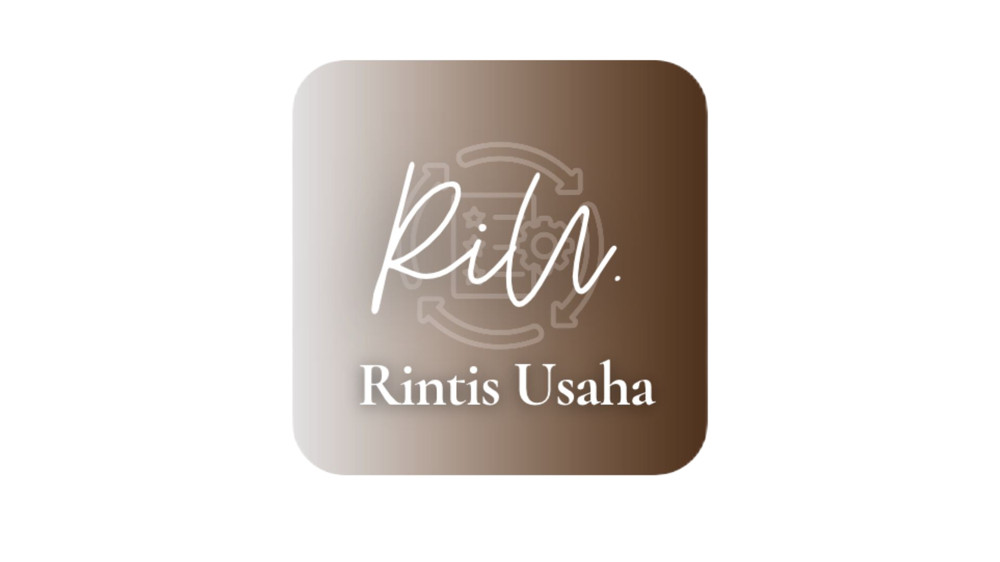

<!DOCTYPE html>
<html lang="id">
<head>
  <meta charset="UTF-8" />
  <meta name="viewport" content="width=device-width, initial-scale=1.0, viewport-fit=cover" />
  <meta name="theme-color" content="#694c37" />
  <title>RintisUsaha — Panduan perizinan usaha</title>
  <script src="https://cdn.tailwindcss.com"></script>
  <script crossorigin src="https://unpkg.com/react@18/umd/react.production.min.js"></script>
  <script crossorigin src="https://unpkg.com/react-dom@18/umd/react-dom.production.min.js"></script>
  <script src="https://unpkg.com/@babel/standalone/babel.min.js"></script>
  <script src="https://unpkg.com/lucide@latest"></script>
  <link rel="stylesheet" href="src/styles/design-system.css" />
  <script src="src/core/storage.js"></script>
  <script src="src/core/riri-api.js"></script>
  <script src="https://cdn.jsdelivr.net/npm/@supabase/supabase-js@2"></script>
  <script src="src/core/supabase-client.js"></script>
  <script type="text/babel" src="src/ui/glossary-badge.jsx"></script>
  <script>
    tailwind.config = {
      theme: {
        extend: {
          colors: {
            slate: {50:"#faf8f4",100:"#f2eee7",200:"#e5ddd2",300:"#cec1b2",400:"#a29383",500:"#827362",600:"#6e6052",700:"#544638",800:"#3d3027",900:"#2d231d"},
            brand: {
              50: '#faf5ef',
              100: '#efe2d2',
              200: '#dcc4a8',
              500: '#a47850',
              600: '#8b603e',
              700: '#6b462f',
              800: '#523422',
              900: '#36251c',
            },
            primary: {
              50: 'var(--color-primary-50)',
              100: 'var(--color-primary-100)',
              200: 'var(--color-primary-200)',
              500: 'var(--color-primary-500)',
              600: 'var(--color-primary-600)',
              700: 'var(--color-primary-700)',
              800: 'var(--color-primary-800)',
              900: 'var(--color-primary-900)'
            },
            surface: 'var(--color-surface)',
            ink: 'var(--color-ink)'
          }
        }
      }
    };
  </script>
</head>
<body class="min-h-screen flex flex-col">
  <div id="root"></div>

  <script type="text/babel">
    const { useState, useEffect, useMemo } = React;

    // Official terminology and service references.
    const GLOSSARY = {
      KBLI: {
        term: "KBLI (Klasifikasi Baku Lapangan Usaha Indonesia)",
        plain: "Kode 5 digit standar pemerintah (BPS & OSS) untuk mengelompokkan jenis kegiatan ekonomi usaha Anda. Pemilihan kode KBLI menentukan tingkat risiko dan jenis izin yang muncul di sistem OSS."
      },
      NIB: {
        term: "NIB (Nomor Induk Berusaha)",
        plain: "Identitas resmi pelaku usaha yang diterbitkan melalui sistem OSS. Bagi usaha mikro dan kecil dengan risiko rendah, NIB sering kali berfungsi sekaligus sebagai legalitas dasar usaha."
      },
      "SPP-IRT": {
        term: "SPP-IRT (Sertifikat Produksi Pangan Industri Rumah Tangga)",
        plain: "Jaminan tertulis resmi bagi produk pangan olahan dengan tingkat risiko rendah yang diproduksi di tempat tinggal (rumah tangga) dengan peralatan manual hingga semi-otomatis dan disimpan lebih dari 7 hari."
      },
      "Sertifikat Halal": {
        term: "Sertifikat Halal BPJPH",
        plain: "Pengakuan kehalalan produk yang diterbitkan oleh Badan Penyelenggara Jaminan Produk Halal (BPJPH). Tersedia jalur Self-Declare (pernyataan mandiri dengan pendamping PPH untuk UMK yang memenuhi syarat) dan jalur Reguler."
      },
      SLHS: {
        term: "SLHS (Sertifikat Laik Higiene Sanitasi)",
        plain: "Bukti tertulis bahwa usaha pangan olahan siap saji (seperti katering/jasa boga) telah memenuhi standar baku mutu kesehatan lingkungan dan proses pengolahan makanan yang higienis."
      },
      SPPL: {
        term: "SPPL (Surat Pernyataan Kesanggupan Pengelolaan dan Pemantauan Lingkungan Hidup)",
        plain: "Pernyataan kesanggupan pelaku usaha untuk mengelola dampak lingkungan hidup bagi usaha yang tidak wajib AMDAL atau UKL-UPL (umumnya otomatis terintegrasi saat mengurus NIB UMK di OSS)."
      }
    };

    const OFFICIAL_SERVICES = [
      {
        id: "oss",
        name: "OSS (Online Single Submission) — Kementerian Investasi / BKPM",
        url: "https://oss.go.id/",
        verificationStatus: "Sumber Resmi Primer (Perlu Verifikasi Berkala)",
        lastReviewedNote: "Mengacu pada kerangka Perizinan Berusaha Berbasis Risiko (PP No. 28/2025 (periksa ketentuan terkini di OSS))",
        purpose: "Pendaftaran Nomor Induk Berusaha (NIB), pengecekan kode KBLI 5 digit, penentuan tingkat risiko usaha, dan pengajuan Perizinan Berusaha Untuk Menunjang Kegiatan Usaha (PB-UMKU).",
        whenRequired: "Wajib bagi hampir seluruh pelaku usaha (perseorangan maupun badan usaha) sebagai pintu awal legalitas.",
        prepareBeforeVisiting: [
          "KTP elektronik (NIK aktif) pemilik usaha",
          "Nomor ponsel & alamat email aktif",
          "Data lokasi usaha, luas lahan/bangunan, dan perkiraan modal usaha (di luar tanah & bangunan)",
          "Deskripsi aktivitas usaha untuk mencocokkan kode KBLI 2020"
        ],
        nextStep: "Buat akun kategori UMK (Usaha Mikro dan Kecil) di oss.go.id, gunakan fitur pencarian KBLI, lalu ajukan penerbitan NIB."
      },
      {
        id: "sppirt",
        name: "Aplikasi SPP-IRT — Badan POM (BPOM)",
        url: "https://sppirt.pom.go.id/",
        verificationStatus: "Sumber Resmi Primer (Perlu Verifikasi Berkala)",
        lastReviewedNote: "Mengacu pada Peraturan BPOM terkait pedoman pemberian SPP-IRT terintegrasi OSS",
        purpose: "Pengajuan pemenuhan komitmen Sertifikat Produksi Pangan Industri Rumah Tangga (P-IRT) untuk pangan olahan terkemas yang diproduksi di rumah tinggal.",
        whenRequired: "Diperlukan jika Anda memproduksi pangan olahan di tempat tinggal (alat manual/semi-otomatis) dalam kemasan eceran dengan masa simpan minimal 7 hari dan termasuk kategori pangan yang diizinkan untuk SPP-IRT.",
        prepareBeforeVisiting: [
          "NIB yang sudah mencantumkan KBLI produksi pangan terkait (diakses melalui PB-UMKU di OSS)",
          "Rancangan label kemasan (nama produk, komposisi bahan, berat bersih, kode produksi, tanggal kedaluwarsa)",
          "Daftar komposisi bahan baku dan alur proses produksi",
          "Kesiapan mengikuti Penyuluhan Keamanan Pangan dan pemeriksaan sarana oleh Dinas Kesehatan Kabupaten/Kota"
        ],
        nextStep: "Ajukan PB-UMKU SPP-IRT melalui akun OSS Anda, lalu masuk ke sppirt.pom.go.id menggunakan akun yang terhubung untuk mengisi data produk dan rancangan label."
      },
      {
        id: "bpjph",
        name: "BPJPH & SIHALAL — Badan Penyelenggara Jaminan Produk Halal",
        url: "https://bpjph.halal.go.id/",
        verificationStatus: "Sumber Resmi Primer (Perlu Verifikasi Berkala)",
        lastReviewedNote: "Portal informasi resmi BPJPH (pengajuan teknis dilakukan melalui ptsp.halal.go.id / SIHALAL)",
        purpose: "Informasi regulasi jaminan produk halal, kriteria jalur Self-Declare (Pernyataan Mandiri UMK) maupun Reguler, serta akses ke layanan SIHALAL.",
        whenRequired: "Diperlukan bagi pelaku usaha makanan, minuman, jasa penyediaan makanan (katering), serta produk barang gunaan/kosmetik sesuai tahapan kewajiban sertifikasi halal nasional.",
        prepareBeforeVisiting: [
          "NIB berbasis risiko",
          "Daftar bahan baku, bahan tambahan, dan kemasan beserta dokumen pendukung kehalalan bahan",
          "Alur proses produksi bersih dari kontaminasi bahan tidak halal",
          "Dokumen Sistem Jaminan Produk Halal (SJPH) sederhana untuk UMK"
        ],
        nextStep: "Periksa ketersediaan kuota fasilitasi/pendampingan PPH atau ketentuan biaya resmi di situs BPJPH, lalu daftar akun pelaku usaha di layanan SIHALAL."
      },
      {
        id: "bpom_md",
        name: "Registrasi Pangan Olahan (e-Reg RPO) — Badan POM",
        url: "https://registrasipangan.pom.go.id/",
        verificationStatus: "Sumber Resmi Primer (Perlu Verifikasi Berkala)",
        lastReviewedNote: "Mengacu pada ketentuan Izin Edar BPOM untuk pangan di luar cakupan SPP-IRT",
        purpose: "Pendaftaran Izin Edar Pangan Olahan (BPOM MD/ML) bagi produk pangan yang tidak memenuhi kriteria SPP-IRT.",
        whenRequired: "Wajib jika tempat produksi berada di lokasi terpisah dari rumah tinggal (pabrik/ruko khusus), menggunakan mesin otomatis penuh, atau memproduksi pangan berisiko tinggi (pangan beku, susu & olahannya, pangan steril komersial, klaim gizi/kesehatan).",
        prepareBeforeVisiting: [
          "NIB dengan KBLI industri pangan yang sesuai",
          "Izin Penerapan Cara Produksi Pangan Olahan yang Baik (CPPOB) / PSB",
          "Hasil uji laboratorium parameter keamanan dan mutu pangan dari lab terakreditasi",
          "Rancangan label kemasan dan spesifikasi bahan baku"
        ],
        nextStep: "Pastifikasi terlebih dahulu di matriks jenis pangan apakah produk Anda masuk ranah SPP-IRT atau wajib Registrasi Pangan Olahan BPOM."
      },
      {
        id: "pajak",
        name: "Direktorat Jenderal Pajak (DJP) — Kementerian Keuangan",
        url: "https://pajak.go.id/",
        verificationStatus: "Sumber Resmi Primer (Perlu Verifikasi Berkala)",
        lastReviewedNote: "Periksa ketentuan PPh UMKM terkini di DJP, termasuk PP No. 20/2026",
        purpose: "Pemadanan NIK sebagai NPWP, edukasi hak dan kewajiban perpajakan pelaku UMKM, serta pelaporan SPT Tahunan.",
        whenRequired: "Relevan bagi seluruh pelaku usaha untuk memastikan kepatuhan administrasi perpajakan dan pemenuhan syarat fasilitas tarif pajak UMKM.",
        prepareBeforeVisiting: [
          "KTP elektronik (NIK) dan Kartu Keluarga untuk validasi data kependudukan",
          "Catatan peredaran bruto (omzet) bulanan usaha secara terpisah dari uang pribadi"
        ],
        nextStep: "Pastikan NIK Anda sudah aktif sebagai NPWP melalui portal DJP dan catat omzet bulanan secara tertib."
      }
    ];

    // Demo profiles and local classification rules.
    const DEMO_SCENARIOS = {
      packaged_food: {
        id: "packaged_food",
        badge: "Skenario 1 — Pangan Kemasan",
        title: "Keripik Pisang Rumahan",
        initialPrompt: "Saya membuat keripik pisang di rumah dan ingin menjualnya dalam kemasan ke warung lokal serta marketplace online.",
        profile: {
          rawDescription: "Saya membuat keripik pisang di rumah dan ingin menjualnya dalam kemasan ke warung lokal serta marketplace online.",
          category: "packaged_food",
          activityType: "produksi_barang",
          productDetail: "Keripik pisang renyah dalam kemasan pouch tertutup",
          productionLocation: "dapur_rumah",
          shelfLife: "lebih_7_hari",
          riskIngredient: "rendah_kering",
          distribution: "warung_dan_marketplace",
          businessScale: "mikro",
          regionLevel: "Kabupaten/Kota di luar kota besar",
          existingPermits: "belum_ada"
        }
      },
      catering: {
        id: "catering",
        badge: "Skenario 2 — Jasa Boga",
        title: "Usaha Katering Kecil",
        initialPrompt: "Saya ingin membuka usaha katering kecil untuk acara lokal dan pesanan nasi kotak.",
        profile: {
          rawDescription: "Saya ingin membuka usaha katering kecil untuk acara lokal dan pesanan nasi kotak.",
          category: "catering",
          activityType: "penyediaan_makanan_siap_saji",
          productDetail: "Layanan katering nasi kotak dan prasmanan untuk acara warga/kantor lokal",
          productionLocation: "dapur_rumah",
          serviceScope: "acara_lokal",
          businessScale: "mikro",
          regionLevel: "Kabupaten/Kota di luar kota besar",
          existingPermits: "belum_ada"
        }
      },
      salon: {
        id: "salon",
        badge: "Skenario 3 — Jasa Kecantikan",
        title: "Salon Rambut Kecil",
        initialPrompt: "Saya ingin membuka salon rambut kecil untuk potong rambut, cuci blow, dan perawatan rambut dasar.",
        profile: {
          rawDescription: "Saya ingin membuka salon rambut kecil untuk potong rambut, cuci blow, dan perawatan rambut dasar.",
          category: "salon",
          activityType: "jasa_layanan",
          productDetail: "Potong rambut, cuci blow, creambath dasar (tanpa tindakan medis/suntik)",
          productionLocation: "kios_sewa_kecil",
          cosmeticUsage: "pakai_produk_bpom",
          businessScale: "mikro",
          regionLevel: "Kabupaten/Kota di luar kota besar",
          existingPermits: "belum_ada"
        }
      },
      ambiguous_drink: {
        id: "ambiguous_drink",
        badge: "Skenario 4 — Input Ambigu",
        title: "Jualan Minuman (Ambigu)",
        initialPrompt: "Saya ingin jualan minuman.",
        profile: {
          rawDescription: "Saya ingin jualan minuman.",
          category: "ambiguous_drink",
          activityType: "belum_jelas",
          productDetail: "Minuman (belum dirinci cara produksi dan kemasannya)",
          productionLocation: "belum_jelas",
          shelfLife: "belum_jelas",
          riskIngredient: "belum_jelas",
          businessScale: "mikro",
          regionLevel: "Belum ditentukan",
          existingPermits: "belum_ada"
        }
      },
      unverified_custom: {
        id: "unverified_custom",
        badge: "Skenario 5 — Perlu Verifikasi Otoritas",
        title: "Klinik Estetika / Limbah Khusus",
        initialPrompt: "Saya ingin membuka usaha pengolahan limbah medis/elektronik dan layanan suntik perawatan kulit di daerah.",
        profile: {
          rawDescription: "Saya ingin membuka usaha pengolahan limbah medis/elektronik dan layanan suntik perawatan kulit di daerah.",
          category: "unverified_custom",
          activityType: "khusus_risiko_tinggi",
          productDetail: "Aktivitas lintas sektor berisiko tinggi (tindakan medis/estetika invasif & pengelolaan limbah B3)",
          productionLocation: "fasilitas_khusus",
          businessScale: "kecil",
          regionLevel: "Kabupaten/Kota",
          existingPermits: "belum_ada"
        }
      }
    };

    // Parser deterministik untuk input bahasa Indonesia alami
    function parseNaturalInput(text) {
      const lower = text.toLowerCase().trim();
      if (!lower) return null;

      // Deteksi skenario 5 (risiko tinggi / di luar cakupan MVP)
      if (lower.includes("limbah") || lower.includes("klinik") || lower.includes("suntik") || lower.includes("medis") || lower.includes("apotek") || lower.includes("tambang")) {
        return {
          ...DEMO_SCENARIOS.unverified_custom.profile,
          rawDescription: text
        };
      }

      // Deteksi skenario 3 (salon / pangkas rambut)
      if (lower.includes("salon") || lower.includes("pangkas rambut") || lower.includes("barbershop") || lower.includes("potong rambut")) {
        return {
          ...DEMO_SCENARIOS.salon.profile,
          rawDescription: text
        };
      }

      // Deteksi skenario 2 (katering / jasa boga)
      if (lower.includes("katering") || lower.includes("catering") || lower.includes("nasi kotak") || lower.includes("prasmanan") || lower.includes("jasa boga")) {
        return {
          ...DEMO_SCENARIOS.catering.profile,
          rawDescription: text
        };
      }

      // Deteksi skenario 1 (keripik / makanan ringan kemasan)
      if (lower.includes("keripik") || lower.includes("kripik") || lower.includes("kue kering") || lower.includes("sambal kemasan") || lower.includes("makanan kemasan")) {
        return {
          ...DEMO_SCENARIOS.packaged_food.profile,
          rawDescription: text
        };
      }

      // Deteksi skenario 4 (ambigu seperti "jualan minuman" atau "usaha makanan" tanpa detail)
      if (lower.includes("minuman") || lower.includes("jualan makanan") || lower.includes("usaha kuliner")) {
        return {
          ...DEMO_SCENARIOS.ambiguous_drink.profile,
          rawDescription: text
        };
      }

      // Default fallback ke unverified jika tidak dikenali secara spesifik
      return {
        ...DEMO_SCENARIOS.unverified_custom.profile,
        rawDescription: text,
        productDetail: "Deskripsi usaha di luar 3 profil terverifikasi utama MVP"
      };
    }

    // Evaluasi apakah profil masih ambigu dan membutuhkan klarifikasi wajib sebelum rekomendasi final
    function evaluateClarificationNeeds(profile) {
      const missingQuestions = [];

      if (profile.category === "ambiguous_drink") {
        if (profile.activityType === "belum_jelas") {
          missingQuestions.push({
            field: "activityType",
            question: "Bagaimana peran Anda dalam usaha minuman ini?",
            reason: "Jalur KBLI dan perizinan sangat berbeda antara produsen minuman kemasan, kedai minuman siap saji, dan penjual kembali (reseller).",
            options: [
              { value: "produksi_kemasan", label: "Memproduksi & mengemas sendiri dalam botol/kemasan tertutup untuk dijual ke toko/online" },
              { value: "kedai_siap_saji", label: "Meracik minuman langsung seduh/siap saji (cup harian) untuk diminum langsung oleh pembeli" },
              { value: "reseller_eceran", label: "Hanya menjual kembali (reseller/warung) minuman kemasan buatan pabrik lain" }
            ]
          });
        }
        if (profile.shelfLife === "belum_jelas") {
          missingQuestions.push({
            field: "shelfLife",
            question: "Berapa lama masa simpan produk dan apa bahan utamanya?",
            reason: "Minuman berbahan susu/disimpan beku atau masa simpan kurang dari 7 hari TIDAK termasuk cakupan SPP-IRT.",
            options: [
              { value: "serbuk_kering_awet", label: "Minuman serbuk kering / seduhan kering dengan masa simpan >= 7 hari di suhu ruang" },
              { value: "cair_susu_dingin", label: "Minuman cair berbahan susu / wajib disimpan di kulkas / pasteurisasi" },
              { value: "langsung_habis", label: "Disajikan langsung habis hari itu juga (kurang dari 7 hari)" }
            ]
          });
        }
        if (profile.productionLocation === "belum_jelas") {
          missingQuestions.push({
            field: "productionLocation",
            question: "Di mana kegiatan usaha ini dilakukan?",
            reason: "SPP-IRT hanya berlaku untuk produksi di rumah tinggal, bukan pabrik terpisah.",
            options: [
              { value: "dapur_rumah", label: "Di dapur rumah tinggal sendiri" },
              { value: "kios_sewa_kecil", label: "Di kios / gerobak / ruko sewa terpisah dari rumah" }
            ]
          });
        }
      }

      return {
        isAmbiguous: missingQuestions.length > 0,
        missingQuestions
      };
    }

    // Build recommendations from the current profile.
    function generateRecommendations(profile) {
      const clarification = evaluateClarificationNeeds(profile);

      // Wait for the required details before producing a final recommendation.
      if (clarification.isAmbiguous) {
        return {
          status: "NEEDS_CLARIFICATION",
          clarification,
          summary: {
            description: profile.rawDescription,
            identifiedActivity: "Belum dapat dipastikan (Deskripsi masih multi-tafsir)",
            assumptions: [
              "RintisUsaha tidak menampilkan kode KBLI atau daftar izin final karena istilah 'jualan minuman' dapat berarti industri minuman kemasan, kedai minuman siap saji, atau perdagangan eceran."
            ],
            needsConfirmation: [
              "Apakah Anda memproduksi sendiri atau hanya menjual kembali?",
              "Apakah minuman dikemas tahan lama (>= 7 hari) atau disajikan langsung minum (siap saji)?",
              "Apakah mengandung susu/bahan berisiko tinggi yang membutuhkan rantai dingin?"
            ]
          },
          kbliCandidates: [],
          roadmap: [],
          checklist: [],
          costs: []
        };
      }

      // Resolusi Skenario 4 setelah pengguna menjawab pertanyaan klarifikasi
      let effectiveCategory = profile.category;
      if (profile.category === "ambiguous_drink") {
        if (profile.activityType === "produksi_kemasan" && profile.shelfLife === "serbuk_kering_awet" && profile.productionLocation === "dapur_rumah") {
          effectiveCategory = "packaged_food";
        } else if (profile.activityType === "kedai_siap_saji" || profile.shelfLife === "langsung_habis") {
          effectiveCategory = "catering";
        } else {
          effectiveCategory = "unverified_custom";
        }
      }

      // --------------------------------------------------------------------------
      // SKENARIO 1: PRODUSEN PANGAN OLAHAN KEMASAN RUMAHAN (KERIPIK PISANG)
      // --------------------------------------------------------------------------
      if (effectiveCategory === "packaged_food") {
        const isHomeProduction = profile.productionLocation === "dapur_rumah";
        const isLowRiskShelfStable = profile.shelfLife !== "kurang_7_hari" && profile.riskIngredient !== "susu_atau_beku";
        const eligibleForSppirt = isHomeProduction && isLowRiskShelfStable;

        return {
          status: "READY",
          clarification,
          summary: {
            description: profile.rawDescription,
            identifiedActivity: "Produksi Pangan Olahan Kemasan Skala Rumah Tangga (Makanan Ringan/Keripik)",
            assumptions: [
              isHomeProduction
                ? "Produksi dilakukan di dapur rumah tinggal menggunakan peralatan manual hingga semi-otomatis."
                : "Produksi dilakukan di fasilitas/bangunan terpisah dari tempat tinggal (mempengaruhi kelayakan SPP-IRT).",
              isLowRiskShelfStable
                ? "Produk berupa pangan kering (keripik pisang) dengan masa simpan minimal 7 hari pada suhu ruang dan tanpa klaim kesehatan."
                : "Produk memiliki masa simpan singkat atau bahan berisiko yang memerlukan jalur selain SPP-IRT.",
              "Skala usaha termasuk Usaha Mikro/Kecil (UMK) dan distribusi dilakukan ke warung lokal serta marketplace."
            ],
            needsConfirmation: [
              "Kecocokan akhir kode KBLI 5 digit di sistem OSS (apakah masuk kelompok keripik/peyek atau pengolahan buah-buahan).",
              "Verifikasi kategori jenis pangan di aplikasi SPP-IRT BPOM dan ketersediaan jadwal Penyuluhan Keamanan Pangan di Dinas Kesehatan Kabupaten/Kota setempat.",
              "Ketersediaan kuota fasilitasi Sertifikat Halal jalur Self-Declare (SEHATI) pada periode berjalan di BPJPH."
            ]
          },
          kbliCandidates: [
            {
              code: "10794",
              title: "Industri Kerupuk, Keripik, Peyek dan Sejenisnya",
              verificationBadge: "Kandidat KBLI 2020 — Wajib Cocokkan di OSS",
              matchReason: "Mencakup usaha pengolahan berbagai macam kerupuk, keripik, peyek, dan makanan ringan sejenisnya melalui proses penggorengan atau pemanggangan.",
              distinctionCondition: "Beberapa pedoman daerah/OSS membedakan antara keripik berbahan umbi/tepung (10794) dengan olahan buah-buahan seperti keripik pisang/nangka (10399). Periksa kedua kode ini saat memilih di OSS agar sinkron dengan modul PB-UMKU SPP-IRT.",
              officialSource: "Portal OSS & KBLI 2020 BPS",
              officialUrl: "https://oss.go.id/"
            },
            {
              code: "10399",
              title: "Industri Pengolahan dan Pengawetan Lainnya Buah-buahan dan Sayuran Bukan Kacang-kacangan",
              verificationBadge: "Kandidat Pembanding — Wajib Cocokkan di OSS",
              matchReason: "Sering digunakan untuk usaha pengolahan berbahan baku utama buah-buahan (seperti pisang) menjadi produk olahan kering/awetan.",
              distinctionCondition: "Gunakan kode ini apabila pada tabel kategori pangan SPP-IRT untuk 'Keripik Pisang' di sistem OSS diarahkan ke kelompok pengolahan buah-buahan.",
              officialSource: "Portal OSS & Aplikasi SPP-IRT BPOM",
              officialUrl: "https://sppirt.pom.go.id/"
            }
          ],
          roadmap: [
            {
              id: "rule_nib_food",
              categoryLabel: "1. Pendaftaran Dasar Usaha (Umum)",
              name: "Nomor Induk Berusaha (NIB) Berbasis Risiko",
              purpose: "Identitas legalitas dasar pelaku usaha dan pintu akses pengajuan perizinan penunjang (PB-UMKU).",
              whyApplies: "Setiap pelaku usaha mikro dan kecil membutuhkan NIB sebelum dapat mengajukan SPP-IRT maupun Sertifikat Halal.",
              prerequisites: ["Memiliki KTP elektronik (NIK aktif)", "Menentukan kode KBLI 5 digit yang sesuai"],
              documentsToPrepare: [
                "KTP elektronik (NIK) pemilik usaha",
                "Alamat lengkap lokasi produksi (rumah tinggal) dan perkiraan modal usaha",
                "Nomor WhatsApp dan alamat email aktif",
                "Pernyataan mandiri kesanggupan pengelolaan lingkungan (SPPL) & K3L di dalam sistem OSS"
              ],
              nextStep: "Daftar akun UMK di oss.go.id dan terbitkan NIB dengan KBLI produksi pangan yang relevan.",
              portalName: "OSS Kementerian Investasi / BKPM",
              portalUrl: "https://oss.go.id/",
              verificationStatus: "Rujukan Resmi — Perlu Konfirmasi (Cek Ketentuan Risiko Terkini di OSS)"
            },
            eligibleForSppirt ? {
              id: "rule_sppirt_food",
              categoryLabel: "2. Izin Edar Pangan (Bersyarat pada Produk & Lokasi Produksi)",
              name: "Sertifikat Produksi Pangan Industri Rumah Tangga (SPP-IRT)",
              purpose: "Izin edar resmi untuk produk pangan olahan berisiko rendah yang diproduksi di rumah tinggal dan diedarkan dalam kemasan eceran.",
              whyApplies: "Berlaku karena Anda memproduksi keripik pisang (pangan kering, masa simpan >= 7 hari) di dapur rumah tinggal untuk dijual dalam kemasan ke warung dan marketplace.",
              prerequisites: ["Memiliki NIB aktif dengan KBLI pangan yang sesuai", "Bukan pangan berisiko tinggi (bukan susu, pangan beku, atau pangan steril komersial)"],
              documentsToPrepare: [
                "NIB yang sudah terbit dari OSS",
                "Rancangan label kemasan (memuat nama produk, komposisi bahan, berat bersih, nama & alamat produsen, tanggal kedaluwarsa, dan kode produksi)",
                "Data komposisi bahan baku dan alur proses produksi",
                "Komitmen mengikuti Penyuluhan Keamanan Pangan dan pemeriksaan sarana produksi oleh Dinas Kesehatan/Puskesmas setempat"
              ],
              nextStep: "Ajukan PB-UMKU SPP-IRT dari dashboard OSS, lalu lengkapi data produk di sppirt.pom.go.id.",
              portalName: "SPP-IRT Badan POM (Terintegrasi OSS)",
              portalUrl: "https://sppirt.pom.go.id/",
              verificationStatus: "Rujukan Resmi — Perlu Konfirmasi (Kelayakan Akhir Ditentukan Sistem SPP-IRT & Dinkes)"
            } : {
              id: "rule_bpom_md_food",
              categoryLabel: "2. Izin Edar Pangan (Bersyarat karena Tidak Memenuhi Kriteria SPP-IRT)",
              name: "Izin Edar Pangan Olahan BPOM (MD)",
              purpose: "Izin edar resmi dari Badan POM untuk pangan olahan yang diproduksi di luar rumah tinggal atau memiliki profil risiko di luar cakupan SPP-IRT.",
              whyApplies: "Karena profil produksi Anda berada di fasilitas terpisah dari tempat tinggal atau jenis produk tidak memenuhi syarat SPP-IRT, jalur yang berlaku adalah Registrasi Pangan Olahan BPOM.",
              prerequisites: ["Memiliki NIB", "Pemenuhan Cara Produksi Pangan Olahan yang Baik (CPPOB)"],
              documentsToPrepare: [
                "Dokumen pemeriksaan sarana produksi (CPPOB)",
                "Hasil uji laboratorium parameter keamanan pangan dari laboratorium terakreditasi",
                "Spesifikasi bahan baku dan rancangan label kemasan"
              ],
              nextStep: "Periksa persyaratan pendaftaran akun perusahaan dan produk di registrasipangan.pom.go.id.",
              portalName: "e-Reg RPO Badan POM",
              portalUrl: "https://registrasipangan.pom.go.id/",
              verificationStatus: "Rujukan Resmi — Perlu Konfirmasi"
            },
            {
              id: "rule_halal_food",
              categoryLabel: "3. Kewajiban Sektoral Pangan (Bersyarat pada Bahan & Proses)",
              name: "Sertifikat Halal BPJPH (Jalur Self-Declare atau Reguler)",
              purpose: "Menjamin kehalalan produk makanan kemasan yang diedarkan di Indonesia sesuai kewajiban Jaminan Produk Halal.",
              whyApplies: "Produk makanan dan minuman kemasan wajib memiliki Sertifikat Halal. Untuk keripik pisang UMK dengan bahan tidak berisiko (pisang, minyak goreng bersertifikat halal, bumbu jelas kehalalannya) dan proses sederhana, Anda berpotensi memenuhi syarat jalur Self-Declare bersama Pendamping Proses Produk Halal (PPH).",
              prerequisites: ["Memiliki NIB", "Seluruh bahan baku (termasuk minyak goreng dan perisa) telah bersertifikat halal atau termasuk bahan tidak kritis (positif list)"],
              documentsToPrepare: [
                "Daftar seluruh bahan baku, merek, dan nomor sertifikat halal masing-masing bahan",
                "Foto produk dan alur proses produksi dari pengupasan hingga pengemasan",
                "Dokumen manual Sistem Jaminan Produk Halal (SJPH) sederhana"
              ],
              nextStep: "Cek persyaratan jalur Self-Declare UMK dan ketersediaan pendamping PPH melalui situs resmi BPJPH.",
              portalName: "BPJPH Kementerian Agama / Badan Halal",
              portalUrl: "https://bpjph.halal.go.id/",
              verificationStatus: "Rujukan Resmi — Perlu Konfirmasi (Kuota Fasilitasi Gratis/SEHATI Harus Dicek Langsung)"
            },
            {
              id: "rule_tax_food",
              categoryLabel: "4. Administrasi Perpajakan & Lingkungan (Perlu Konfirmasi Sesuai Kondisi Usaha)",
              name: "Pemadanan NIK-NPWP & Ketentuan Pajak UMKM",
              purpose: "Memastikan kepatuhan administrasi perpajakan bagi pelaku usaha orang pribadi.",
              whyApplies: "Untuk Wajib Pajak Orang Pribadi UMKM yang memenuhi ketentuan, bagian omzet usaha sampai Rp500 juta pertama dalam satu tahun pajak tidak dikenai PPh. Ini bukan pembebasan semua pajak atau otomatis menghapus kewajiban administrasi. Periksa status NPWP, pencatatan omzet, dan kewajiban pelaporan di DJP.",
              prerequisites: ["KTP elektronik dan Kartu Keluarga valid"],
              documentsToPrepare: [
                "KTP dan Kartu Keluarga untuk pemadanan NIK-NPWP",
                "Buku/tabel pencatatan omzet bulanan usaha"
              ],
              nextStep: "Periksa status aktivasi NIK sebagai NPWP di portal Direktorat Jenderal Pajak.",
              portalName: "Direktorat Jenderal Pajak (DJP)",
              portalUrl: "https://pajak.go.id/",
              verificationStatus: "Rujukan Resmi — Perlu Konfirmasi"
            }
          ],
          checklist: [
            { id: "chk_f1", category: "Dokumen Dasar", title: "Siapkan KTP (NIK aktif), email, dan nomor WhatsApp khusus usaha", status: "pending" },
            { id: "chk_f2", category: "Pendaftaran OSS", title: "Bandingkan KBLI 10794 & 10399 di oss.go.id dan terbitkan NIB", status: "pending" },
            { id: "chk_f3", category: "Persiapan Pangan", title: "Catat daftar komposisi bahan baku (pisang, minyak, garam/perisa) beserta mereknya", status: "pending" },
            { id: "chk_f4", category: "Desain Kemasan", title: "Buat rancangan label kemasan sesuai standar (nama produk, komposisi, berat bersih, kedaluwarsa)", status: "pending" },
            { id: "chk_f5", category: "Izin Edar", title: eligibleForSppirt ? "Ajukan PB-UMKU SPP-IRT di OSS & lengkapi formulir di sppirt.pom.go.id" : "Siapkan dokumen CPPOB dan uji lab untuk registrasi BPOM MD", status: "needs_confirmation" },
            { id: "chk_f6", category: "Sertifikasi Halal", title: "Hubungi Pendamping PPH resmi di daerah Anda untuk verifikasi bahan jalur Self-Declare di SIHALAL", status: "needs_confirmation" },
            { id: "chk_f7", category: "Perpajakan", title: "Pastikan NIK sudah padan sebagai NPWP di pajak.go.id dan mulai catat omzet bulanan", status: "pending" }
          ],
          costs: [
            {
              id: "cost_nib",
              category: "1. Biaya Resmi Pemerintah (PNBP)",
              item: "Pendaftaran Nomor Induk Berusaha (NIB) di OSS",
              amountType: "FREE_VERIFIED",
              numericAmount: 0,
              displayAmount: "Rp 0 (Tidak Dipungut Biaya di Sistem OSS)",
              basis: "Pendaftaran mandiri akun dan penerbitan NIB melalui portal resmi oss.go.id tidak memungut biaya pendaftaran.",
              condition: "Berlaku jika diurus sendiri secara daring tanpa perantara biro jasa.",
              verificationStatus: "Terverifikasi pada layanan resmi OSS"
            },
            {
              id: "cost_sppirt",
              category: "6. Biaya yang Bergantung Daerah / Belum Dapat Ditentukan Pasti",
              item: eligibleForSppirt ? "Penerbitan SPP-IRT & Penyuluhan Keamanan Pangan" : "PNBP Registrasi Pangan Olahan BPOM & Uji Lab",
              amountType: "UNKNOWN",
              numericAmount: null,
              displayAmount: "Perlu Konfirmasi ke Pemda / Instansi Terkait",
              basis: eligibleForSppirt
                ? "Pengajuan aplikasi daring di sppirt.pom.go.id tidak memungut biaya aplikasi, namun kebijakan fasilitasi penyuluhan/pemeriksaan mengikuti ketentuan Pemda/Dinas Kesehatan setempat."
                : "Besaran PNBP BPOM dan biaya uji laboratorium bergantung pada jumlah parameter uji dan kategori produk.",
              condition: "Konfirmasikan langsung ke Dinas Kesehatan atau DPMPTSP Kabupaten/Kota setempat.",
              verificationStatus: "Perlu Verifikasi di Daerah Setempat"
            },
            {
              id: "cost_halal",
              category: "5. Biaya Bersyarat pada Jalur & Kuota Program",
              item: "Sertifikasi Halal BPJPH (Self-Declare vs Reguler)",
              amountType: "UNKNOWN",
              numericAmount: null,
              displayAmount: "Bergantung Kuota SEHATI atau Tarif Resmi BPJPH",
              basis: "Jika mendapatkan kuota program fasilitasi gratis pemerintah (SEHATI) jalur Self-Declare, biaya ditanggung program. Jika di luar kuota subsidi atau menggunakan jalur Reguler (LPH), berlaku tarif layanan sesuai ketentuan BPJPH.",
              condition: "Jangan mengasumsikan otomatis gratis sebelum memastikan ketersediaan kuota resmi di SIHALAL.",
              verificationStatus: "Wajib Cek di bpjph.halal.go.id"
            },
            {
              id: "cost_prep_pack",
              category: "3. Biaya Persiapan Dokumen & Kemasan (Estimasi Mandiri)",
              item: "Cetak contoh kemasan, timbangan dapur, dan kelengkapan sanitasi dasar (celemek, penutup kepala)",
              amountType: "ESTIMATE",
              numericAmount: 150000,
              displayAmount: "Rp 150.000 (Estimasi Persiapan Internal)",
              basis: "Perkiraan biaya belanja perlengkapan sanitasi dapur rumah tangga dan cetak sampel label kemasan awal.",
              condition: "Bukan biaya pemerintah; bergantung pada perlengkapan yang sudah Anda miliki di rumah.",
              verificationStatus: "Ilustrasi Estimasi Persiapan"
            }
          ]
        };
      }

      // --------------------------------------------------------------------------
      // SKENARIO 2: USAHA KATERING KECIL (JASA BOGA)
      // --------------------------------------------------------------------------
      if (effectiveCategory === "catering") {
        return {
          status: "READY",
          clarification,
          summary: {
            description: profile.rawDescription,
            identifiedActivity: "Penyediaan Jasa Boga / Katering Makanan Siap Saji",
            assumptions: [
              "Usaha menyiapkan makanan matang siap santap (nasi kotak/prasmanan) berdasarkan pesanan untuk acara atau periode tertentu.",
              "Makanan dikonsumsi segera (masa simpan kurang dari 7 hari pada suhu ruang), sehingga BUKAN kategori pangan olahan terkemas eceran SPP-IRT.",
              "Pengolahan dilakukan di dapur skala mikro/kecil."
            ],
            needsConfirmation: [
              "Pemilihan antara KBLI 56210 (Katering Event Tertentu) dan KBLI 56290 (Jasa Boga Periode Tertentu/Kontrak Rutin) di OSS.",
              "Persyaratan teknis Sertifikat Laik Higiene Sanitasi (SLHS) Jasa Boga sesuai golongan katering di Dinas Kesehatan Kabupaten/Kota setempat."
            ]
          },
          kbliCandidates: [
            {
              code: "56210",
              title: "Jasa Boga Untuk Suatu Event Tertentu (Event Catering)",
              verificationBadge: "Kandidat Utama KBLI 2020 — Wajib Cocokkan di OSS",
              matchReason: "Mencakup penyediaan jasa makanan berdasarkan perjanjian/pesanan untuk acara tertentu seperti hajatan, rapat, syukuran, atau acara lokal.",
              distinctionCondition: "Cocok jika pesanan bersifat per acara (event-based). Jika Anda melayani kontrak makan siang harian tetap untuk pabrik/kantor/sekolah dalam jangka waktu tertentu, periksa juga KBLI 56290.",
              officialSource: "Portal OSS & KBLI 2020 BPS",
              officialUrl: "https://oss.go.id/"
            },
            {
              code: "56290",
              title: "Penyediaan Jasa Boga Periode Tertentu",
              verificationBadge: "Kandidat Alternatif — Wajib Cocokkan di OSS",
              matchReason: "Mencakup penyediaan jasa boga berdasarkan kontrak selama periode waktu tertentu (misalnya katering harian karyawan perusahaan atau instansi).",
              distinctionCondition: "Anda dapat mencantumkan KBLI 56210 sebagai kegiatan utama dan 56290 sebagai kegiatan pendukung di OSS bila menjalankan keduanya.",
              officialSource: "Portal OSS & KBLI 2020 BPS",
              officialUrl: "https://oss.go.id/"
            }
          ],
          roadmap: [
            {
              id: "rule_nib_catering",
              categoryLabel: "1. Pendaftaran Dasar Usaha (Umum)",
              name: "Nomor Induk Berusaha (NIB) Jasa Boga di OSS",
              purpose: "Identitas resmi usaha jasa boga dan dasar pemenuhan standar usaha/PB-UMKU.",
              whyApplies: "Wajib dimiliki usaha katering untuk beroperasi secara resmi dan mengikuti pengadaan/pesanan instansi maupun warga.",
              prerequisites: ["KTP elektronik (NIK aktif)"],
              documentsToPrepare: [
                "KTP elektronik pemilik usaha",
                "Data lokasi dapur pengolahan dan kapasitas produksi rata-rata",
                "Pernyataan mandiri kesanggupan pengelolaan lingkungan (SPPL) dan K3L di OSS"
              ],
              nextStep: "Daftar NIB di oss.go.id dengan memilih KBLI 56210 dan/atau 56290.",
              portalName: "OSS Kementerian Investasi / BKPM",
              portalUrl: "https://oss.go.id/",
              verificationStatus: "Rujukan Resmi — Perlu Konfirmasi"
            },
            {
              id: "rule_slhs_catering",
              categoryLabel: "2. Standar Higiene Pangan Siap Saji (Bersyarat pada Aktivitas Jasa Boga — Bukan SPP-IRT)",
              name: "Sertifikat Laik Higiene Sanitasi (SLHS) Jasa Boga",
              purpose: "Memastikan dapur katering, peralatan masak, air bersih, dan penjamah makanan memenuhi standar kesehatan pangan siap saji.",
              whyApplies: "Usaha katering menyajikan makanan siap santap yang berisiko cepat basi (masa simpan < 7 hari), sehingga diatur melalui rezim Higiene Sanitasi Jasa Boga (SLHS), BUKAN SPP-IRT.",
              prerequisites: ["Memiliki NIB dengan KBLI Jasa Boga"],
              documentsToPrepare: [
                "Bukti pelatihan/kursus higiene sanitasi pangan bagi pemilik dan penjamah makanan",
                "Kesiapan inspeksi kesehatan lingkungan dapur (tempat cuci bahan, pemisahan bahan mentah & matang, tempat sampah tertutup)",
                "Hasil uji kualitas air bersih/makanan jika dipersyaratkan oleh Dinas Kesehatan setempat sesuai golongan jasa boga"
              ],
              nextStep: "Periksa kewajiban PB-UMKU SLHS pada dashboard OSS Anda dan konsultasikan jadwal inspeksi ke Dinas Kesehatan Kabupaten/Kota.",
              portalName: "OSS & Dinas Kesehatan Kabupaten/Kota",
              portalUrl: "https://oss.go.id/",
              verificationStatus: "Perlu Konfirmasi Teknis ke Dinas Kesehatan Setempat"
            },
            {
              id: "rule_halal_catering",
              categoryLabel: "3. Kewajiban Sektoral Penyediaan Makanan",
              name: "Sertifikat Halal Jasa Boga (BPJPH)",
              purpose: "Menjamin seluruh menu, dapur pengolahan, peralatan masak, dan bahan baku katering memenuhi standar halal.",
              whyApplies: "Jasa penyediaan makanan dan minuman (termasuk katering) termasuk objek kewajiban sertifikasi halal. Selain itu, banyak pelanggan acara/instansi mensyaratkan katering bersertifikat halal.",
              prerequisites: ["Memiliki NIB", "Seluruh daging/unggas berasal dari rumah potong hewan (RPH) bersertifikat halal"],
              documentsToPrepare: [
                "Daftar seluruh menu yang ditawarkan dan matriks bahan baku (khususnya titik kritis daging, kaldu, saus, minyak)",
                "SOP pencucian peralatan masak dan pemisahan fasilitas agar bebas najis",
                "Dokumen Sistem Jaminan Produk Halal (SJPH)"
              ],
              nextStep: "Periksa ketentuan jalur sertifikasi halal untuk kategori Jasa Boga/Katering di portal resmi BPJPH.",
              portalName: "BPJPH / SIHALAL",
              portalUrl: "https://bpjph.halal.go.id/",
              verificationStatus: "Rujukan Resmi — Perlu Konfirmasi (Cek Kriteria Jalur Katering di SIHALAL)"
            },
            {
              id: "rule_tax_catering",
              categoryLabel: "4. Administrasi Perpajakan (Penting jika Melayani Instansi/Kantor)",
              name: "Aktivasi NIK-NPWP & Pemahaman Pajak Jasa Katering",
              purpose: "Menyiapkan dokumen perpajakan apabila menerima pesanan dari instansi pemerintah atau perusahaan swasta.",
              whyApplies: "Pelanggan instansi/kantor sering meminta NPWP saat pembayaran pesanan katering. Ketentuan pemotongan/pemungutan pajak mengikuti aturan perpajakan yang berlaku.",
              prerequisites: ["KTP elektronik aktif"],
              documentsToPrepare: [
                "NIK yang telah dipadankan sebagai NPWP",
                "Rekapitulasi nota pesanan dan pembukuan sederhana"
              ],
              nextStep: "Cek status NPWP di pajak.go.id dan konsultasikan administrasi pajak katering di KPP Pratama/KP2KP terdekat.",
              portalName: "Direktorat Jenderal Pajak (DJP)",
              portalUrl: "https://pajak.go.id/",
              verificationStatus: "Rujukan Resmi — Perlu Konfirmasi"
            }
          ],
          checklist: [
            { id: "chk_c1", category: "Dokumen Dasar", title: "Siapkan KTP (NIK aktif) dan daftar layanan katering (event / harian)", status: "pending" },
            { id: "chk_c2", category: "Pendaftaran OSS", title: "Ajukan NIB di oss.go.id dengan kode KBLI 56210 / 56290 (bukan KBLI industri kemasan)", status: "pending" },
            { id: "chk_c3", category: "Sanitasi Dapur", title: "Siapkan standar kebersihan dapur (tempat cuci terpisah, celemek, penutup kepala, tempat sampah tertutup)", status: "pending" },
            { id: "chk_c4", category: "SLHS Dinkes", title: "Konfirmasi persyaratan SLHS Jasa Boga dan uji sampel air/makanan ke Dinas Kesehatan setempat", status: "needs_confirmation" },
            { id: "chk_c5", category: "Sertifikasi Halal", title: "Data seluruh pemasok daging/ayam (pastikan bersertifikat halal) dan daftar menu untuk pengajuan di BPJPH", status: "needs_confirmation" },
            { id: "chk_c6", category: "Perpajakan", title: "Pastikan NIK-NPWP aktif di pajak.go.id untuk kebutuhan penagihan ke klien acara/instansi", status: "pending" }
          ],
          costs: [
            {
              id: "cost_nib_cat",
              category: "1. Biaya Resmi Pemerintah (PNBP)",
              item: "Pendaftaran Nomor Induk Berusaha (NIB) di OSS",
              amountType: "FREE_VERIFIED",
              numericAmount: 0,
              displayAmount: "Rp 0 (Tidak Dipungut Biaya di Sistem OSS)",
              basis: "Penerbitan NIB secara mandiri melalui portal resmi oss.go.id tidak dikenakan biaya.",
              condition: "Diurus mandiri secara daring.",
              verificationStatus: "Terverifikasi pada layanan resmi OSS"
            },
            {
              id: "cost_slhs_cat",
              category: "5. Biaya yang Bergantung Daerah & Pengujian Laboratorium",
              item: "Pemeriksaan Kualitas Air / Makanan untuk Persyaratan SLHS",
              amountType: "UNKNOWN",
              numericAmount: null,
              displayAmount: "Bergantung Tarif Lab Daerah (Labkesda) Setempat",
              basis: "Apabila Dinas Kesehatan setempat mewajibkan uji laboratorium sampel air bersih atau usap alat makan untuk SLHS, tarif retribusi mengacu pada Perda/Labkesda masing-masing daerah.",
              condition: "Tanyakan langsung ke Dinas Kesehatan atau Puskesmas wilayah usaha Anda.",
              verificationStatus: "Perlu Konfirmasi ke Dinas Kesehatan Setempat"
            },
            {
              id: "cost_halal_cat",
              category: "6. Biaya yang Belum Dapat Ditentukan Tanpa Pengecekan Jalur",
              item: "Biaya Sertifikasi Halal Jasa Boga (BPJPH)",
              amountType: "UNKNOWN",
              numericAmount: null,
              displayAmount: "Mengikuti Ketentuan Jalur & Tarif Resmi BPJPH",
              basis: "Besaran biaya bergantung pada apakah usaha katering masuk skema reguler (melalui pemeriksaan LPH) atau skema fasilitasi UMK yang berlaku di BPJPH.",
              condition: "Wajib dikonfirmasi pada jadwal dan regulasi BPJPH terkini.",
              verificationStatus: "Wajib Cek di bpjph.halal.go.id"
            },
            {
              id: "cost_prep_cat",
              category: "3. Biaya Persiapan Dokumen & Perlengkapan Sanitasi (Estimasi Mandiri)",
              item: "Perlengkapan higienitas penjamah makanan (celemek, hairnet, sarung tangan food-grade, kotak P3K dapur)",
              amountType: "ESTIMATE",
              numericAmount: 250000,
              displayAmount: "Rp 250.000 (Estimasi Persiapan Internal)",
              basis: "Perkiraan biaya belanja perlengkapan standar kebersihan dapur sebelum inspeksi sanitasi.",
              condition: "Estimasi belanja perlengkapan internal, bukan pungutan pemerintah.",
              verificationStatus: "Ilustrasi Estimasi Persiapan"
            }
          ]
        };
      }

      // --------------------------------------------------------------------------
      // SKENARIO 3: SALON RAMBUT KECIL (JASA KECANTIKAN)
      // --------------------------------------------------------------------------
      if (effectiveCategory === "salon") {
        const makesOwnCosmetics = profile.cosmeticUsage === "racik_sendiri";

        return {
          status: "READY",
          clarification,
          summary: {
            description: profile.rawDescription,
            identifiedActivity: "Jasa Perawatan & Penataan Rambut (Salon Kecantikan / Pangkas Rambut)",
            assumptions: [
              "Usaha bergerak di bidang jasa layanan perawatan rambut dasar (potong, cuci, blow, creambath) tanpa tindakan medis invasif (tanpa suntik/bedah estetika).",
              "Ini adalah usaha jasa kecantikan, sehingga SAMA SEKALI TIDAK memerlukan SPP-IRT atau izin edar pangan.",
              makesOwnCosmetics
                ? "PERHATIAN: Anda memilih meracik/mengemas ulang produk kosmetik merek sendiri, yang memicu kewajiban perizinan kosmetik BPOM terpisah."
                : "Salon hanya menggunakan produk sampo, vitamin, dan cat rambut yang sudah memiliki nomor izin edar (Notifikasi NA) BPOM."
            ],
            needsConfirmation: [
              "Pemilihan antara KBLI 96112 (Aktivitas Salon Kecantikan) atau KBLI 96111 (Aktivitas Pangkas Rambut) di OSS.",
              "Ketentuan tata ruang/zonasi dan pengelolaan limbah cair domestik di tingkat Pemerintah Daerah setempat."
            ]
          },
          kbliCandidates: [
            {
              code: "96112",
              title: "Aktivitas Salon Kecantikan",
              verificationBadge: "Kandidat KBLI 2020 — Wajib Cocokkan di OSS",
              matchReason: "Mencakup layanan perawatan rambut (pencucian, pemotongan, penataan, pewarnaan, pengeritingan, pelurusan) serta perawatan kecantikan dasar non-medis.",
              distinctionCondition: "Tidak mencakup klinik kecantikan medis yang dilakukan oleh dokter/tenaga medis (yang masuk kelompok aktivitas kesehatan manusia).",
              officialSource: "Portal OSS & KBLI 2020 BPS",
              officialUrl: "https://oss.go.id/"
            },
            {
              code: "96111",
              title: "Aktivitas Pangkas Rambut",
              verificationBadge: "Kandidat Alternatif — Wajib Cocokkan di OSS",
              matchReason: "Mencakup usaha jasa pemangkasan dan penataan rambut sederhana (seperti barbershop atau tempat potong rambut khusus).",
              distinctionCondition: "Pilih 96111 jika layanan Anda terbatas pada potong/cukur rambut; pilih 96112 jika mencakup layanan perawatan salon yang lebih luas.",
              officialSource: "Portal OSS & KBLI 2020 BPS",
              officialUrl: "https://oss.go.id/"
            }
          ],
          roadmap: [
            {
              id: "rule_nib_salon",
              categoryLabel: "1. Pendaftaran Dasar Usaha (Umum)",
              name: "Nomor Induk Berusaha (NIB) Usaha Jasa Salon di OSS",
              purpose: "Identitas resmi usaha jasa salon/pangkas rambut dan pemenuhan standar risiko usaha.",
              whyApplies: "Memberikan kepastian hukum bagi usaha jasa salon skala mikro/kecil.",
              prerequisites: ["KTP elektronik (NIK aktif)"],
              documentsToPrepare: [
                "KTP elektronik pemilik usaha",
                "Alamat lokasi kios/tempat usaha dan luas ruang layanan",
                "Pernyataan mandiri K3L (Keselamatan, Kesehatan Kerja, dan Lingkungan Hidup) serta SPPL di OSS"
              ],
              nextStep: "Ajukan NIB di oss.go.id dengan memeriksa kode KBLI 96112 atau 96111.",
              portalName: "OSS Kementerian Investasi / BKPM",
              portalUrl: "https://oss.go.id/",
              verificationStatus: "Rujukan Resmi — Perlu Konfirmasi"
            },
            {
              id: "rule_safety_salon",
              categoryLabel: "2. Standar Keselamatan & Sanitasi Layanan (Bersyarat pada Aktivitas Jasa)",
              name: "Pemenuhan Standar K3L & Kebersihan Peralatan Salon",
              purpose: "Melindungi pelanggan dan pekerja dari risiko penularan penyakit kulit/rambut atau iritasi bahan kimia.",
              whyApplies: "Sebagai usaha jasa perawatan tubuh/rambut, Anda wajib menjaga sterilisasi gunting/sisir, ventilasi ruangan saat menggunakan bahan kimia (cat rambut), dan pengelolaan limbah bilasan.",
              prerequisites: ["Memiliki NIB dan mengisi pernyataan mandiri K3L di OSS"],
              documentsToPrepare: [
                "SOP kebersihan alat potong rambut (sterilisasi/disinfeksi alat dan handuk bersih)",
                "Kotak P3K dan alat pemadam api ringan (APAR) sesuai komitmen K3L di OSS"
              ],
              nextStep: "Unduh dan simpan lampiran pernyataan mandiri K3L dan SPPL yang terbit bersama NIB Anda di OSS.",
              portalName: "OSS Kementerian Investasi / BKPM",
              portalUrl: "https://oss.go.id/",
              verificationStatus: "Rujukan Resmi — Perlu Konfirmasi"
            },
            {
              id: "rule_cosmetic_salon",
              categoryLabel: "3. Kepatuhan Produk Kosmetik yang Digunakan",
              name: makesOwnCosmetics
                ? "PERINGATAN: Perizinan Produksi / Notifikasi Kosmetik BPOM"
                : "Pemeriksaan Izin Edar (Notifikasi BPOM) Produk Salon",
              purpose: "Memastikan seluruh produk perawatan rambut yang diaplikasikan ke pelanggan aman dan legal.",
              whyApplies: makesOwnCosmetics
                ? "Karena Anda meracik atau memberi merek ulang (repacking) produk kosmetik untuk dijual, Anda TIDAK cukup hanya memiliki izin salon, melainkan wajib memenuhi izin industri/maklon kosmetik dan Notifikasi BPOM."
                : "Selama Anda hanya menggunakan produk sampo, kondisioner, dan cat rambut buatan pabrik resmi untuk melayani pelanggan, Anda tidak perlu mengurus izin produksi kosmetik—cukup pastikan semua produk memiliki nomor Notifikasi BPOM (kode NA).",
              prerequisites: ["Daftar produk perawatan yang digunakan di salon"],
              documentsToPrepare: [
                "Daftar produk kosmetik salon beserta nomor Notifikasi BPOM pada kemasan masing-masing produk"
              ],
              nextStep: "Periksa nomor izin edar produk kosmetik yang Anda beli melalui layanan Cek BPOM sebelum digunakan ke pelanggan.",
              portalName: "Badan POM (Layanan Informasi Konsumen)",
              portalUrl: "https://oss.go.id/",
              verificationStatus: "Rujukan Resmi — Perlu Konfirmasi"
            },
            {
              id: "rule_tax_salon",
              categoryLabel: "4. Administrasi Perpajakan & Ketentuan Daerah",
              name: "Pemadanan NIK-NPWP & Konfirmasi Ketentuan Daerah",
              purpose: "Kepatuhan administrasi perpajakan usaha jasa perseorangan.",
              whyApplies: "Diperlukan untuk pencatatan penghasilan usaha jasa salon dan pemenuhan administrasi perpajakan.",
              prerequisites: ["KTP elektronik aktif"],
              documentsToPrepare: [
                "NIK yang telah dipadankan sebagai NPWP",
                "Catatan pemasukan harian/bulanan layanan salon"
              ],
              nextStep: "Pastikan NIK-NPWP aktif di pajak.go.id.",
              portalName: "Direktorat Jenderal Pajak (DJP)",
              portalUrl: "https://pajak.go.id/",
              verificationStatus: "Rujukan Resmi — Perlu Konfirmasi"
            }
          ],
          checklist: [
            { id: "chk_s1", category: "Dokumen Dasar", title: "Siapkan KTP (NIK aktif), data ukuran ruang salon, dan alamat lokasi usaha", status: "pending" },
            { id: "chk_s2", category: "Pendaftaran OSS", title: "Ajukan NIB di oss.go.id dengan memilih KBLI 96112 (Salon Kecantikan) atau 96111 (Pangkas Rambut)", status: "pending" },
            { id: "chk_s3", category: "Keamanan Produk", title: "Periksa kemasan sampo, vitamin, dan cat rambut di salon—pastikan semuanya memiliki nomor izin edar BPOM", status: "pending" },
            { id: "chk_s4", category: "Standar K3L", title: "Siapkan alat sterilisasi/pembersih sisir & gunting, kotak P3K, serta ventilasi udara yang memadai", status: "pending" },
            { id: "chk_s5", category: "Konfirmasi Daerah", title: "Pastikan ke kelurahan/DPMPTSP setempat terkait tata ruang jika membuka kios di lingkungan perumahan", status: "needs_confirmation" },
            { id: "chk_s6", category: "Perpajakan", title: "Padankan NIK sebagai NPWP di pajak.go.id dan buat buku catatan pendapatan harian", status: "pending" }
          ],
          costs: [
            {
              id: "cost_nib_salon",
              category: "1. Biaya Resmi Pemerintah (PNBP)",
              item: "Pendaftaran Nomor Induk Berusaha (NIB) di OSS",
              amountType: "FREE_VERIFIED",
              numericAmount: 0,
              displayAmount: "Rp 0 (Tidak Dipungut Biaya di Sistem OSS)",
              basis: "Pendaftaran NIB untuk UMK melalui oss.go.id tidak dikenakan biaya.",
              condition: "Diurus sendiri secara daring.",
              verificationStatus: "Terverifikasi pada layanan resmi OSS"
            },
            {
              id: "cost_prep_salon",
              category: "3. Biaya Persiapan K3L & Sanitasi Alat (Estimasi Mandiri)",
              item: "Kotak P3K, cairan disinfektan alat cukur/sisir, dan perlengkapan sanitasi dasar",
              amountType: "ESTIMATE",
              numericAmount: 200000,
              displayAmount: "Rp 200.000 (Estimasi Persiapan Internal)",
              basis: "Perkiraan belanja perlengkapan pemenuhan komitmen K3L mandiri untuk salon kecil.",
              condition: "Bukan biaya pemerintah; dibeli mandiri sesuai kebutuhan ruang usaha.",
              verificationStatus: "Ilustrasi Estimasi Persiapan"
            },
            {
              id: "cost_local_salon",
              category: "5. Biaya yang Bergantung Lokasi (Perlu Konfirmasi)",
              item: "Retribusi Persetujuan Bangunan / Kebersihan Daerah (Jika Ada)",
              amountType: "UNKNOWN",
              numericAmount: null,
              displayAmount: "Bergantung Perda Kabupaten/Kota & Status Tempat Usaha",
              basis: "Apabila Anda membangun bangunan baru atau memasang reklame papan nama berukuran tertentu, ketentuan retribusi mengikuti Peraturan Daerah setempat.",
              condition: "Konfirmasikan ke DPMPTSP atau kantor kecamatan/kelurahan setempat.",
              verificationStatus: "Perlu Konfirmasi ke Pemda Setempat"
            }
          ]
        };
      }

      // Activities outside the verified ruleset remain explicitly unverified.
      return {
        status: "UNVERIFIED_SCOPE",
        clarification,
        summary: {
          description: profile.rawDescription,
          identifiedActivity: "Aktivitas Khusus / Berisiko Tinggi / Di Luar Cakupan Aturan Terverifikasi MVP",
          assumptions: [
            "RintisUsaha membatasi rekomendasi otomatis hanya pada sektor yang aturannya telah dipetakan secara terstruktur.",
            "Usaha yang melibatkan tindakan medis/estetika invasif, pengelolaan limbah B3, atau minuman berisiko tinggi (susu/rantai dingin) memiliki persyaratan teknis ketat yang tidak boleh disederhanakan menjadi perizinan mikro biasa."
          ],
          needsConfirmation: [
            "Penentuan kode KBLI 5 digit secara presisi bersama petugas pendamping di DPMPTSP atau sistem OSS.",
            "Verifikasi tingkat risiko (Menengah Rendah, Menengah Tinggi, atau Tinggi) berdasarkan PP No. 28/2025 (periksa ketentuan terkini di OSS).",
            "Persyaratan Sertifikat Standar terverifikasi atau Izin Kementerian/Lembaga teknis terkait (Kemenkes, KLHK, atau BPOM)."
          ]
        },
        kbliCandidates: [
          {
            code: "PERLU VERIFIKASI",
            title: "Klasifikasi KBLI Memerlukan Pemeriksaan Teknis Langsung di OSS",
            verificationBadge: "Belum Terverifikasi di Basis Aturan MVP",
            matchReason: "Aktivitas ini belum tercakup dalam aturan MVP. Tingkat risiko belum dapat ditentukan dari deskripsi ini.",
            distinctionCondition: "RintisUsaha tidak mengarang kode KBLI untuk aktivitas yang belum terverifikasi di basis pengetahuan kami. Silakan gunakan fitur pencarian KBLI 2020 di portal resmi OSS atau konsultasikan ke DPMPTSP setempat.",
            officialSource: "Portal Informasi KBLI OSS",
            officialUrl: "https://oss.go.id/"
          }
        ],
        roadmap: [
          {
            id: "rule_unverified_oss",
            categoryLabel: "1. Langkah Rujukan Resmi Pertama",
            name: "Konsultasi Klasifikasi KBLI & Risiko di OSS / DPMPTSP",
            purpose: "Memastikan kode KBLI dan tingkat risiko usaha ditentukan oleh otoritas resmi sebelum mengeluarkan biaya investasi.",
            whyApplies: "Karena aktivitas ini belum tercakup dalam pemetaan MVP, periksa klasifikasi dan persyaratan dengan OSS atau DPMPTSP terlebih dahulu.",
            prerequisites: ["Rincian teknis proses bisnis, peralatan yang digunakan, dan kualifikasi tenaga ahli"],
            documentsToPrepare: [
              "Uraian lengkap alur kegiatan usaha dan produk/jasa yang dihasilkan",
              "Data lokasi rencana usaha untuk pengecekan Kesesuaian Kegiatan Pemanfaatan Ruang (KKPR)",
              "Dokumen kualifikasi profesi/tenaga teknis jika bergerak di bidang kesehatan atau lingkungan"
            ],
            nextStep: "Kunjungi portal oss.go.id atau datang langsung ke gerai layanan DPMPTSP (Mal Pelayanan Publik) di Kabupaten/Kota Anda.",
            portalName: "OSS Kementerian Investasi / BKPM",
            portalUrl: "https://oss.go.id/",
            verificationStatus: "Wajib Konfirmasi Langsung ke Otoritas Resmi"
          }
        ],
        checklist: [
          { id: "chk_u1", category: "Identifikasi Teknis", title: "Susun deskripsi tertulis rincian aktivitas, bahan/alat yang dipakai, dan lokasi usaha", status: "pending" },
          { id: "chk_u2", category: "Verifikasi KBLI", title: "Cek langsung kandidat KBLI 2020 pada menu Informasi -> Klasifikasi Baku Lapangan Usaha di oss.go.id", status: "needs_confirmation" },
          { id: "chk_u3", category: "Konsultasi Resmi", title: "Jadwalkan konsultasi gratis di kantor DPMPTSP Kabupaten/Kota sebelum menyewa tempat atau membeli peralatan mahal", status: "needs_confirmation" }
        ],
        costs: [
          {
            id: "cost_unverified_all",
            category: "6. Biaya yang Belum Dapat Ditentukan Secara Andal",
            item: "Biaya Perizinan Teknis, Persetujuan Lingkungan, dan Sertifikasi Standar",
            amountType: "UNKNOWN",
            numericAmount: null,
            displayAmount: "Belum Dapat Ditentukan (Wajib Verifikasi Otoritas)",
            basis: "RintisUsaha tidak menampilkan estimasi biaya untuk aktivitas yang klasifikasi KBLI dan tingkat risikonya belum terverifikasi.",
            condition: "Tanyakan rincian PNBP resmi langsung pada instansi teknis terkait atau DPMPTSP.",
            verificationStatus: "Belum Dapat Ditentukan"
          }
        ]
      };
    }

    // UI helpers and application state.
    // Select only curated portals used by the current recommendation, in roadmap order.
    // Several requirements can share a portal (for example NIB and SLHS through OSS).
    function getRelevantServices(recommendation, hasProfile) {
      if (!hasProfile || recommendation.status === "NEEDS_CLARIFICATION") return [];
      const services = new Map();
      for (const step of recommendation.roadmap || []) {
        const official = OFFICIAL_SERVICES.find(service => service.url === step.portalUrl);
        if (!official) continue;
        if (!services.has(official.id)) services.set(official.id, { ...official, steps: [] });
        services.get(official.id).steps.push(step);
      }
      return Array.from(services.values()).map(service => ({
        ...service,
        purpose: service.steps.map(step => step.purpose).filter(Boolean).join(" "),
        whenRequired: service.steps.map(step => step.whyApplies).filter(Boolean).join(" "),
        prepareBeforeVisiting: Array.from(new Set(service.steps.flatMap(step => step.documentsToPrepare || []))),
        nextStep: service.steps.map(step => step.nextStep).filter(Boolean).join(" ")
      }));
    }

    function isRiriAnalysisComplete(result, resolvedProfile) {
      return result.complete === true && Array.isArray(result.questions) &&
        result.questions.length === 0 &&
        !evaluateClarificationNeeds(resolvedProfile).isAmbiguous;
    }

    function handleChatEnter(event, submit) {
      if (event.key !== "Enter" || event.shiftKey || event.nativeEvent?.isComposing || event.keyCode === 229) return;
      event.preventDefault();
      submit();
    }

    const APP_NAVIGATION = [
      { id: "landing", label: "Beranda", short: "Beranda", icon: "M3 10 12 3l9 7M5 9v12h5v-7h4v7h5V9" },
      { id: "profiling", label: "Tanya Riri", short: "Riri", icon: "M21 11a8 8 0 0 1-8 8H5l-3 3V11a9 9 0 0 1 19 0ZM7 10h10M7 14h6" },
      { id: "results", label: "Peta izin", short: "Peta izin", icon: "m3 5 6-2 6 2 6-2v16l-6 2-6-2-6 2V5ZM9 3v16M15 5v16" },
      { id: "dashboard", label: "Persiapan saya", short: "Persiapan", icon: "M8 4H4v17h16V4h-4M8 2h8v5H8V2ZM8 12l2 2 5-5M8 18h8" },
      { id: "directory", label: "Layanan resmi", short: "Layanan", icon: "m3 8 9-5 9 5H3ZM5 11v7M10 11v7M14 11v7M19 11v7M3 21h18" },
      { id: "account", label: "Akun saya", short: "Akun", icon: "M20 21a8 8 0 0 0-16 0M12 11a4 4 0 1 0 0-8 4 4 0 0 0 0 8Z" }
    ];

    function App() {
      // State navigasi: 'landing' | 'profiling' | 'results' | 'dashboard' | 'directory'
      const [activeTab, setActiveTab] = useState("landing");
      const [profile, setProfile] = useState(DEMO_SCENARIOS.packaged_food.profile);
      const [inputText, setInputText] = useState("");
      const [checklistState, setChecklistState] = useState({});
      
      const [toastMessage, setToastMessage] = useState(null);
      const [ririMessages, setRiriMessages] = useState([]);
      const [ririQuestions, setRiriQuestions] = useState([]);
      const [ririBusy, setRiriBusy] = useState(false);
      const [hasProfile, setHasProfile] = useState(false);
      const [account, setAccount] = useState(null);
      const [loginName, setLoginName] = useState("");
      const [loginEmail, setLoginEmail] = useState("");
      const [loginPassword, setLoginPassword] = useState("");
      const [authMode, setAuthMode] = useState("signin");
      const [authStatus, setAuthStatus] = useState("idle");
      const [supabaseClient, setSupabaseClient] = useState(null);
      const [authReady, setAuthReady] = useState(false);
      const chatEnd = React.useRef(null);
      useEffect(() => { chatEnd.current?.scrollIntoView({behavior: "smooth", block: "nearest"}); }, [ririMessages, ririBusy]);

      useEffect(() => {
        window.scrollTo({ top: 0, behavior: "instant" });
        document.getElementById("main-content")?.focus({ preventScroll: true });
      }, [activeTab]);

      useEffect(() => {
        let authSubscription;
        window.supabaseReady
          .then(async (client) => {
            setSupabaseClient(client);
            const { data } = await client.auth.getSession();
            if (data.session?.user) {
              setAccount({
                id: data.session.user.id,
                name: data.session.user.user_metadata?.full_name || data.session.user.email?.split("@")[0] || "Pengguna",
                email: data.session.user.email || ""
              });
              if (new URLSearchParams(window.location.search).get("auth") === "confirmed") {
                window.history.replaceState({}, document.title, window.location.pathname);
                setAuthStatus("authenticated");
                setActiveTab("landing");
              }
            }
            if (new URLSearchParams(window.location.search).get("auth") === "pending") {
              setAuthStatus("waiting_confirmation");
              setActiveTab("account");
            }
            const listener = client.auth.onAuthStateChange((_event, session) => {
              if (session?.user) {
                setAccount({
                  id: session.user.id,
                  name: session.user.user_metadata?.full_name || session.user.email?.split("@")[0] || "Pengguna",
                  email: session.user.email || ""
                });
                setAuthStatus("authenticated");
                if (new URLSearchParams(window.location.search).get("auth") === "confirmed") {
                  window.history.replaceState({}, document.title, window.location.pathname);
                  setActiveTab("landing");
                }
              } else {
                setAccount(null);
                setAuthStatus("idle");
              }
            });
            authSubscription = listener.data.subscription;
          })
          .catch((error) => showToast(`Supabase belum siap: ${error.message}`))
          .finally(() => setAuthReady(true));
        return () => authSubscription?.unsubscribe();
      }, []);

      function navigateTo(tab) {
        if (!hasProfile && ["results", "dashboard"].includes(tab)) {
          setActiveTab("profiling");
          showToast("Ceritakan usahamu dulu untuk membuat peta izin.");
        } else setActiveTab(tab);
      }

      // Muat dari localStorage saat pertama kali dibuka
      useEffect(() => {
        const savedState = loadAppState();
        if (savedState) {
          if (savedState.profile) setProfile(savedState.profile);
          setHasProfile(Boolean(savedState.hasProfile));
          if (savedState.inputText) setInputText(savedState.inputText);
          if (savedState.checklistState) setChecklistState(savedState.checklistState);
          if (Array.isArray(savedState.ririMessages)) setRiriMessages(savedState.ririMessages);
          if (Array.isArray(savedState.ririQuestions)) setRiriQuestions(savedState.ririQuestions);
        }
      }, []);

      // Simpan otomatis ke localStorage
      useEffect(() => {
        saveAppState({ profile, inputText, checklistState, hasProfile, ririMessages, ririQuestions });
      }, [profile, inputText, checklistState, hasProfile, ririMessages, ririQuestions]);

      const recommendation = useMemo(() => generateRecommendations(profile), [profile]);
      const relevantServices = useMemo(() => getRelevantServices(recommendation, hasProfile), [recommendation, hasProfile]);
      const navigationItems = useMemo(() => APP_NAVIGATION.map((item) => (
        item.id === "account" && account ? { ...item, label: "Profil saya", short: "Profil" } : item
      )), [account]);

      // Sinkronisasi item checklist dengan rekomendasi aktif
      const mergedChecklist = useMemo(() => {
        return (recommendation.checklist || []).map((item) => ({
          ...item,
          currentStatus: checklistState[item.id] || item.status
        }));
      }, [recommendation, checklistState]);

      // Hitung persentase progres nyata dari checklist
      const progressMetrics = useMemo(() => {
        const total = mergedChecklist.length;
        if (total === 0) return { total: 0, completed: 0, pending: 0, needsConfirmation: 0, percentage: 0 };
        const completed = mergedChecklist.filter((i) => i.currentStatus === "completed").length;
        const needsConfirmation = mergedChecklist.filter((i) => i.currentStatus === "needs_confirmation").length;
        const pending = total - completed - needsConfirmation;
        const percentage = Math.round((completed / total) * 100);
        return { total, completed, pending, needsConfirmation, percentage };
      }, [mergedChecklist]);

      // Hitung total biaya HANYA dari item yang memiliki nilai numerik bermakna
      const costSummary = useMemo(() => {
        const items = recommendation.costs || [];
        const knownNumericItems = items.filter((c) => typeof c.numericAmount === "number");
        const unknownItems = items.filter((c) => c.numericAmount === null);
        const totalKnown = knownNumericItems.reduce((acc, cur) => acc + cur.numericAmount, 0);
        return {
          totalKnown,
          knownCount: knownNumericItems.length,
          unknownCount: unknownItems.length
        };
      }, [recommendation]);

      function showToast(msg) {
        setToastMessage(msg);
        setTimeout(() => setToastMessage(null), 3500);
      }

      function handleLoadScenario(scenarioKey, targetScreen = "profiling") {
        const sc = DEMO_SCENARIOS[scenarioKey];
        if (!sc || ririBusy) return;
        setProfile({ ...sc.profile });
        setHasProfile(true);
        setRiriMessages([]);
        setRiriQuestions([]);
        setChecklistState({});
        setInputText(sc.initialPrompt);
        setActiveTab(targetScreen);
        showToast(`Memuat ${sc.badge}: ${sc.title}`);
      }

      async function handleLogin(event) {
        event.preventDefault();
        if (!supabaseClient) {
          showToast("Supabase belum siap. Coba lagi sebentar.");
          return;
        }
        if (!loginEmail.trim() || !loginPassword || (authMode === "signup" && !loginName.trim())) {
          showToast(authMode === "signin" ? "Isi email dan password untuk sign in." : "Isi nama, email, dan password untuk sign up.");
          return;
        }
        const email = loginEmail.trim().toLowerCase();
        if (authMode === "signup") {
          const { data, error } = await supabaseClient.auth.signUp({
            email,
            password: loginPassword,
            options: {
              data: { full_name: loginName.trim() || email.split("@")[0] },
              emailRedirectTo: `${window.location.origin}/?auth=confirmed`
            }
          });
          if (error) {
            showToast(`Sign up gagal: ${error.message}`);
            return;
          }
          if (!data.session) {
            setAuthStatus("waiting_confirmation");
            window.open(`${window.location.origin}/?auth=pending&email=${encodeURIComponent(email)}`, "_blank", "noopener,noreferrer");
            showToast("Akun berhasil dibuat. Cek email untuk konfirmasi sebelum masuk.");
            return;
          }
          showToast("Sign up berhasil dan kamu sudah masuk.");
          setAuthStatus("authenticated");
          setActiveTab("landing");
          setLoginPassword("");
          return;
        } else {
          const { data, error } = await supabaseClient.auth.signInWithPassword({ email, password: loginPassword });
          if (error) {
            showToast(`Sign in gagal: ${error.message}`);
            return;
          }
          showToast(`Selamat datang kembali, ${data.user?.user_metadata?.full_name || email}.`);
        }
        setLoginPassword("");
        setActiveTab("account");
      }

      async function handleLogout() {
        await supabaseClient?.auth.signOut();
        setAuthStatus("idle");
        setLoginName("");
        setLoginEmail("");
        setLoginPassword("");
        setActiveTab("landing");
        showToast("Kamu sudah keluar dari akun di perangkat ini.");
      }

      function handleAnalyzeInput(e) {
        if (e) e.preventDefault();
        if (!inputText.trim()) {
          showToast("Silakan tuliskan cerita singkat usaha Anda terlebih dahulu.");
          return;
        }
        if (ririBusy) return;
        const parsed = ririMessages.length ? profile : parseNaturalInput(inputText);
        if (parsed) {
          setProfile(parsed);
          setHasProfile(true);
          askRiri(inputText, parsed);
          setInputText("");
        }
      }

      async function askRiri(message, nextProfile = profile) {
        if (ririBusy) return;
        const userMessage = { role: "user", text: message };
        const nextMessages = [...ririMessages, userMessage];
        setRiriMessages(nextMessages);
        setRiriBusy(true);
        try {
          const result = await requestRiriAnalysis({
            message,
            profile: nextProfile,
            messages: nextMessages
          });
          const resolvedProfile = { ...nextProfile, ...(result.profilePatch || {}) };
          setProfile(resolvedProfile);
          setRiriQuestions(result.questions || []);
          setRiriMessages((current) => [...current, { role: "assistant", text: result.reply }]);
          if (isRiriAnalysisComplete(result, resolvedProfile)) {
            setActiveTab("results");
            showToast("Analisis selesai. Ini peta legalitas awal usahamu.");
          } else {
            showToast("Riri sudah merespons. Lengkapi detail usaha untuk melanjutkan.");
          }
        } catch (error) {
          setRiriQuestions([]);
          setRiriMessages((current) => [...current, {
            role: "assistant",
            text: "Koneksi percakapanku sedang terganggu. Kamu tetap bisa melanjutkan: buka “Periksa detail usaha” di bawah untuk mengonfirmasi profil, lalu lihat peta izin awalmu."
          }]);
          showToast(`Percakapan belum terhubung: ${error.message}`);
        } finally {
          setRiriBusy(false);
        }
      }

      function getRiriAvatar() {
        if (ririMessages.length === 0) return "assets/riri-nyapa.jpg";
        if (ririBusy || ririQuestions.length > 0) return "assets/riri-ngobrol.jpg";
        return "assets/riri-babay.jpg";
      }

      function handleUpdateProfileField(field, value) {
        setProfile((prev) => ({
          ...prev,
          [field]: value
        }));
      }

      function handleToggleChecklistStatus(itemId, nextStatus) {
        setChecklistState((prev) => ({
          ...prev,
          [itemId]: nextStatus
        }));
      }

      function formatRupiah(num) {
        return new Intl.NumberFormat("id-ID", {
          style: "currency",
          currency: "IDR",
          maximumFractionDigits: 0
        }).format(num);
      }

      return (
        <div className={`app-shell min-h-screen flex flex-col bg-slate-50 text-slate-900 screen-${activeTab}`}>
          {/* HEADER & NAVIGASI UTAMA */}
          <a className="skip-link" href="#main-content">Lewati ke konten</a>
          <header className="bg-white border-b border-slate-200 sticky top-0 z-20">
            <div className="max-w-6xl mx-auto px-4 py-3 flex flex-wrap items-center justify-between gap-3">
              <button
                type="button"
                onClick={() => setActiveTab("landing")}
                className="flex items-center gap-2.5 text-left focus:outline-none"
              >
                
              </button>

              <nav className="flex flex-wrap items-center gap-1 sm:gap-2" aria-label="Navigasi Utama">
                {navigationItems.map((item) => (
                  <button
                    key={item.id}
                    type="button"
                    onClick={() => navigateTo(item.id)}
                    aria-current={activeTab === item.id ? "page" : undefined}
                    className={`px-3 py-1.5 rounded-lg text-xs sm:text-sm font-medium transition ${
                      activeTab === item.id
                        ? "nav-active"
                        : "text-slate-600 hover:bg-slate-100"
                    }`}
                  >
                    {item.label}
                  </button>
                ))}
              </nav>
            </div>
          </header>

          {/* TOAST NOTIFIKASI */}
          {toastMessage && (
            <div role="status" className="app-toast fixed bottom-5 right-5 z-50 bg-slate-900 text-white text-sm px-4 py-3 rounded-xl shadow-xl border border-slate-700 flex items-center gap-2">
              <span className="w-2 h-2 rounded-full bg-brand-500"></span>
              <span>{toastMessage}</span>
            </div>
          )}

          {/* Route content */}
          <main id="main-content" tabIndex="-1" className="flex-1 max-w-6xl w-full mx-auto px-4 py-6 sm:py-8">
            {/* Landing */}
            {activeTab === "landing" && (
              <div className="home home-editorial">
                <section className="home-intro" aria-labelledby="home-title">
                  <div className="home-intro-content">
                    <h1 id="home-title">Dari cerita usaha<br/>menjadi <span>peta legalitas.</span></h1>
                    <p className="home-lead">Merintis usaha sudah banyak tantangannya.<br className="home-desktop-break"/> Memahami perizinan tak perlu menambah kebingungan.</p>
                    <p className="home-description">Ceritakan kegiatan usahamu dalam bahasa sehari-hari. RintisUsaha membantu menemukan kandidat KBLI, memahami dokumen yang perlu disiapkan, dan menentukan langkah awal menuju layanan resmi.</p>
                    <div className="home-actions">
                      <button type="button" className="home-button home-button-primary" onClick={() => setActiveTab("profiling")}>Mulai ceritakan usahamu <span aria-hidden="true">→</span></button>
                      <a className="home-button home-button-secondary" href="#cara-kerja">Lihat cara kerjanya</a>
                    </div>
                    <div className="home-transparency"><strong>Panduan independen.</strong> RintisUsaha tidak menerbitkan izin atau memungut biaya pengurusan. Kamu akan diarahkan langsung ke portal resmi pemerintah untuk melanjutkan proses.</div>
                  </div>
                  <aside className="home-route" aria-label="Ilustrasi alur persiapan usaha">
                    <div className="route-shop" aria-hidden="true">
                      <svg viewBox="0 0 260 140" fill="none"><path d="M28 125H232" stroke="#cbb9a5"/><path d="M66 62H194V124H66V62Z" fill="#faf6ef" stroke="#8a694c" strokeWidth="2"/><path d="M57 62L70 28H190L203 62" fill="#dbc6aa" stroke="#8a694c" strokeWidth="2"/><path d="M57 62V68C57 82 86 82 86 68C86 82 115 82 115 68C115 82 145 82 145 68C145 82 174 82 174 68C174 82 203 82 203 68V62H57Z" fill="#f6eee3" stroke="#8a694c" strokeWidth="2"/><path d="M88 28L86 62M113 28L115 62M146 28L145 62M172 28L174 62" stroke="#8a694c" strokeWidth="2"/><rect x="84" y="89" width="43" height="23" rx="2" fill="#e6d8c4"/><path d="M149 124V89H179V124" stroke="#8a694c" strokeWidth="2"/><path d="M159 105V110" stroke="#8a694c" strokeWidth="2" strokeLinecap="round"/><path d="M41 124V102M36 98C25 82 47 84 41 104C57 89 62 108 41 109" stroke="#9b9a78" strokeWidth="2" strokeLinecap="round"/></svg>
                    </div>
                    <div className="route-paper">
                      <div className="route-paper-heading"><span>PERSIAPAN USAHAMU</span><span aria-hidden="true">↗</span></div>
                      <h2>Mulai kecil.<br/>Siapkan dengan baik.</h2>
                      <ol className="route-steps"><li><span>1</span><div><strong>Ceritakan aktivitas usaha</strong><p>Produk, proses, dan lokasi</p></div></li><li><span>2</span><div><strong>Periksa kandidat KBLI</strong><p>Cocokkan dengan kegiatanmu</p></div></li><li><span>3</span><div><strong>Siapkan kebutuhan izin</strong><p>Lanjutkan ke layanan resmi</p></div></li></ol>
                      <div className="route-companion"><span>Riri mendampingi tiap langkah.</span></div>
                    </div>
                  </aside>
                </section>
                <section className="official-logo-strip" aria-label="Rujukan layanan resmi">
                  <div className="official-logo-intro"><span>RUJUKAN LAYANAN</span><p>Kenali portal resmi yang mungkin relevan dengan kebutuhan usahamu.</p></div>
                  <div className="official-logo-list">
                    {[
                      ["assets/logo/oss.png", "NIB / OSS"],
                      ["assets/logo/mui.png", "Sertifikasi Halal"],
                      ["assets/logo/jakevo.png", "JakEVO"]
                    ].map(([logo, label]) => <div className="official-logo-item" key={label}><span>{label}</span></div>)}
                  </div>
                </section>
                <section className="home-benefits" id="cara-kerja" aria-label="Cara kerja dan manfaat RintisUsaha">
                  {[
                    ["01", "Temukan kandidat KBLI yang relevan.", "Ceritakan apa yang kamu jual dan bagaimana usahamu berjalan. Periksa kandidat kode usaha beserta alasan kecocokannya sebelum memilih di OSS."],
                    ["02", "Pahami izin dan dokumen yang diperlukan.", "Kenali pendaftaran dasar seperti NIB serta izin lanjutan yang bergantung pada produk, proses, dan lokasi usahamu."],
                    ["03", "Lanjutkan ke layanan resmi dengan terarah.", "Gunakan daftar persiapan untuk mencatat progres, lalu akses portal pemerintah yang sesuai dengan kebutuhan usahamu."]
                  ].map(([number,title,description]) => <article className="home-benefit" key={number}><div className="benefit-heading"><span className="benefit-icon" aria-hidden="true"><svg viewBox="0 0 24 24" fill="none" stroke="currentColor" strokeWidth="1.5" strokeLinecap="round" strokeLinejoin="round">{number === "01" ? <><circle cx="10" cy="10" r="6"/><path d="m15 15 5 5M8 10h4M10 8v4"/></> : number === "02" ? <><path d="M7 3h10v3h3v15H4V6h3V3Z"/><path d="M7 6h10M8 12l2 2 5-5M8 18h8"/></> : <><path d="M14 4h6v6M20 4l-9 9M10 5H4v15h15v-6"/></>}</svg></span><p className="home-benefit-label">MANFAAT {number}</p></div><h2>{title}</h2><p>{description}</p></article>)}
                </section>
                <section className="home-examples" aria-label="Contoh usaha"><div><h2>Ingin lihat contohnya dulu?</h2><p>Pilih usaha untuk mencoba alur persiapannya.</p></div><div>{[["packaged_food","Keripik rumahan"],["catering","Katering kecil"],["salon","Salon rambut"]].map(([key,label]) => <button type="button" key={key} onClick={() => handleLoadScenario(key)}>{label} <span aria-hidden="true">↗</span></button>)}</div></section>
              </div>
            )}

            {/* Riri conversation */}
            {activeTab === "profiling" && (
              <div className="riri-workspace">
                <div className="workspace-heading"><div><h1>Ceritakan usahamu</h1><p>Mulai dari aktivitas usaha, lalu kita periksa kebutuhan izinnya.</p></div><span>Langkah 1 dari 3</span></div>
                <div className="riri-stage">
                  <section className="chat-panel" aria-label="Percakapan dengan Riri">
                    <div className="chat-heading"><div className="assistant-identity"><div><strong>Riri</strong><span>Pendamping perizinan usaha</span></div></div><button disabled={ririBusy} className="text-button" onClick={() => {setRiriMessages([]); setRiriQuestions([]); setInputText(""); setHasProfile(false); setChecklistState({});}}>Mulai ulang</button></div>
                    <div className="chat-messages" role="log" aria-live="polite">
                      <div className="assistant-message"><span className="message-label">Riri</span><p>Hai, aku Riri! Usaha apa yang sedang atau ingin kamu jalankan?</p><p>Ceritakan apa yang kamu jual, bagaimana membuatnya, dan di mana usahamu berjalan.</p></div>
                      {!ririMessages.length && <div className="starter-prompts">{[["packaged_food","Aku bikin keripik di rumah"],["catering","Aku mau buka katering"],["salon","Aku punya salon rambut"]].map(([key,label]) => <button disabled={ririBusy} key={key} onClick={() => setInputText(DEMO_SCENARIOS[key].initialPrompt)}>{label} <span>↗</span></button>)}</div>}
                      {ririMessages.map((message,index) => <div key={index} className={message.role === "user" ? "user-message" : "assistant-message"}><span className="message-label">{message.role === "user" ? "Kamu" : "Riri"}</span><p>{message.text}</p></div>)}
                      {ririBusy && <p className="thinking" role="status">Riri sedang memahami ceritamu<span>...</span></p>}
                      {ririQuestions.slice(0,1).map(item => <div key={item.id} className="followup-question"><p>{item.question}</p><div>{item.options.map(option => <button disabled={ririBusy} key={option} onClick={() => askRiri(`${item.question}: ${option}`)}>{option}</button>)}</div></div>)}
                      <div ref={chatEnd}/>
                    </div>
                    <form onSubmit={handleAnalyzeInput} className="chat-composer"><label htmlFor="cerita-usaha" className="sr-only">Ceritakan usahamu atau jawab Riri</label><textarea id="cerita-usaha" onKeyDown={e => handleChatEnter(e, handleAnalyzeInput)} rows="3" value={inputText} onChange={e => setInputText(e.target.value)} placeholder="Contoh: Aku bikin keripik pisang di rumah, lalu jual lewat warung..."/><div><span>Enter untuk kirim · Shift+Enter untuk baris baru.</span><button className="primary-button" disabled={ririBusy || !inputText.trim()} type="submit">{ririBusy ? "Sebentar…" : "Kirim"} <span>↑</span></button></div></form>
                  </section>
                </div>
                <div className="profile-details-grid" hidden={!hasProfile}>
                <div>
                  {/* Pertanyaan Klarifikasi Adaptif berdasarkan Profil */}
                  <details className="bg-white rounded-2xl border border-slate-200 p-6 shadow-sm space-y-5"><summary className="detail-summary">Periksa detail usaha <span>Konfirmasi asumsi Riri sebelum melanjutkan ↓</span></summary>
                    <div className="flex items-center justify-between border-b border-slate-100 pb-3">
                      <div>
                        <h2 className="text-base font-bold text-slate-900">
                          Lengkapi profil usahamu
                        </h2>
                        <p className="text-xs text-slate-500">
                          Ubah jawaban di bawah ini kapan saja untuk melihat bagaimana peta perizinan berubah secara dinamis.
                        </p>
                      </div>
                      <span className="text-xs font-semibold px-2.5 py-1 rounded-full bg-slate-100 text-slate-700">
                        Dapat Direvisi
                      </span>
                    </div>

                    {/* Extra fields for ambiguous drink profiles. */}
                    {profile.category === "ambiguous_drink" && (
                      <div className="space-y-4 bg-amber-50/70 border border-amber-200 rounded-xl p-4">
                        <div className="text-xs font-bold text-amber-900 uppercase tracking-wider">
                          ⚠️ Deskripsi Masih Ambigu — Riri Membutuhkan Klarifikasi Sebelum Memberikan KBLI
                        </div>
                        <p className="text-xs text-amber-800">
                          Kalimat "{profile.rawDescription}" belum menjelaskan apakah Anda memproduksi minuman kemasan tahan lama, membuka kedai minuman siap saji, atau hanya menjual kembali produk orang lain. Jawab 3 pertanyaan berikut:
                        </p>

                        <div className="space-y-3">
                          <div>
                            <label className="block text-xs font-semibold text-slate-800 mb-1">
                              1. Apa aktivitas utama Anda terhadap produk minuman tersebut?
                            </label>
                            <select
                              value={profile.activityType}
                              onChange={(e) => handleUpdateProfileField("activityType", e.target.value)}
                              className="w-full rounded-lg border border-slate-300 p-2 text-xs bg-white"
                            >
                              <option value="belum_jelas">-- Pilih aktivitas utama --</option>
                              <option value="produksi_kemasan">Memproduksi & mengemas sendiri untuk dijual ke toko/online</option>
                              <option value="kedai_siap_saji">Meracik minuman siap saji (cup harian) langsung untuk pembeli</option>
                              <option value="reseller_eceran">Hanya menjual kembali (reseller) minuman merek lain</option>
                            </select>
                          </div>

                          <div>
                            <label className="block text-xs font-semibold text-slate-800 mb-1">
                              2. Bagaimana karakteristik penyimpanan dan bahan minuman?
                            </label>
                            <select
                              value={profile.shelfLife}
                              onChange={(e) => handleUpdateProfileField("shelfLife", e.target.value)}
                              className="w-full rounded-lg border border-slate-300 p-2 text-xs bg-white"
                            >
                              <option value="belum_jelas">-- Pilih karakteristik produk --</option>
                              <option value="serbuk_kering_awet">Serbuk/kering tahan simpan &gt;= 7 hari di suhu ruang</option>
                              <option value="langsung_habis">Siap saji langsung minum (&lt; 7 hari)</option>
                              <option value="cair_susu_dingin">Minuman cair berbahan susu / wajib lemari pendingin (Risiko Tinggi)</option>
                            </select>
                          </div>

                          <div>
                            <label className="block text-xs font-semibold text-slate-800 mb-1">
                              3. Di mana lokasi pengolahannya?
                            </label>
                            <select
                              value={profile.productionLocation}
                              onChange={(e) => handleUpdateProfileField("productionLocation", e.target.value)}
                              className="w-full rounded-lg border border-slate-300 p-2 text-xs bg-white"
                            >
                              <option value="belum_jelas">-- Pilih lokasi usaha --</option>
                              <option value="dapur_rumah">Di dapur rumah tinggal sendiri</option>
                              <option value="kios_sewa_kecil">Di kios / ruko / tempat usaha terpisah dari rumah</option>
                            </select>
                          </div>
                        </div>
                      </div>
                    )}

                    {/* Pertanyaan Kondisional Khusus Profil A: Pangan Kemasan */}
                    {profile.category === "packaged_food" && (
                      <div className="space-y-4">
                        <div>
                          <label className="block text-xs font-semibold text-slate-700 mb-1">
                            1. Lokasi Produksi Pangan (Menentukan kelayakan SPP-IRT vs BPOM MD):
                          </label>
                          <select
                            value={profile.productionLocation}
                            onChange={(e) => handleUpdateProfileField("productionLocation", e.target.value)}
                            className="w-full rounded-xl border border-slate-300 p-2.5 text-sm bg-white"
                          >
                            <option value="dapur_rumah">Dapur rumah tinggal sendiri (Alat manual / semi-otomatis)</option>
                            <option value="pabrik_terpisah">Ruko / bangunan produksi khusus terpisah dari tempat tinggal</option>
                          </select>
                        </div>

                        <div>
                          <label className="block text-xs font-semibold text-slate-700 mb-1">
                            2. Karakteristik Produk & Masa Simpan:
                          </label>
                          <select
                            value={profile.riskIngredient}
                            onChange={(e) => handleUpdateProfileField("riskIngredient", e.target.value)}
                            className="w-full rounded-xl border border-slate-300 p-2.5 text-sm bg-white"
                          >
                            <option value="rendah_kering">Pangan kering (keripik pisang), masa simpan &gt;= 7 hari di suhu ruang</option>
                            <option value="susu_atau_beku">Pangan beku (frozen food) / mengandung susu / pangan steril komersial</option>
                          </select>
                        </div>

                        <div>
                          <label className="block text-xs font-semibold text-slate-700 mb-1">
                            3. Cara Pengemasan & Distribusi:
                          </label>
                          <select
                            value={profile.distribution}
                            onChange={(e) => handleUpdateProfileField("distribution", e.target.value)}
                            className="w-full rounded-xl border border-slate-300 p-2.5 text-sm bg-white"
                          >
                            <option value="warung_dan_marketplace">Kemasan eceran berlabel untuk dititipkan ke warung & marketplace</option>
                            <option value="pesanan_langsung">Hanya dibungkus saat ada pesanan langsung tetangga</option>
                          </select>
                        </div>
                      </div>
                    )}

                    {/* Pertanyaan Kondisional Khusus Profil B: Katering */}
                    {profile.category === "catering" && (
                      <div className="space-y-4">
                        <div>
                          <label className="block text-xs font-semibold text-slate-700 mb-1">
                            1. Model Layanan Katering (Menentukan KBLI 56210 vs 56290):
                          </label>
                          <select
                            value={profile.serviceScope || "acara_lokal"}
                            onChange={(e) => handleUpdateProfileField("serviceScope", e.target.value)}
                            className="w-full rounded-xl border border-slate-300 p-2.5 text-sm bg-white"
                          >
                            <option value="acara_lokal">Berdasarkan pesanan acara tertentu (hajatan, rapat, syukuran warga)</option>
                            <option value="kontrak_rutin">Kontrak penyediaan makan rutin periode tertentu (kantor/pabrik/sekolah)</option>
                          </select>
                        </div>

                        <div>
                          <label className="block text-xs font-semibold text-slate-700 mb-1">
                            2. Lokasi Dapur Pengolahan Makanan:
                          </label>
                          <select
                            value={profile.productionLocation}
                            onChange={(e) => handleUpdateProfileField("productionLocation", e.target.value)}
                            className="w-full rounded-xl border border-slate-300 p-2.5 text-sm bg-white"
                          >
                            <option value="dapur_rumah">Dapur rumah tinggal skala mikro</option>
                            <option value="dapur_khusus">Dapur katering komersial terpisah</option>
                          </select>
                        </div>
                      </div>
                    )}

                    {/* Pertanyaan Kondisional Khusus Profil C: Salon */}
                    {profile.category === "salon" && (
                      <div className="space-y-4">
                        <div>
                          <label className="block text-xs font-semibold text-slate-700 mb-1">
                            1. Penggunaan Produk Kosmetik/Perawatan Rambut di Salon:
                          </label>
                          <select
                            value={profile.cosmeticUsage || "pakai_produk_bpom"}
                            onChange={(e) => handleUpdateProfileField("cosmeticUsage", e.target.value)}
                            className="w-full rounded-xl border border-slate-300 p-2.5 text-sm bg-white"
                          >
                            <option value="pakai_produk_bpom">Hanya memakai sampo/cat rambut bermerek yang sudah berizin BPOM</option>
                            <option value="racik_sendiri">Meracik atau mengemas ulang krim/kosmetik merek salon sendiri</option>
                          </select>
                        </div>

                        <div>
                          <label className="block text-xs font-semibold text-slate-700 mb-1">
                            2. Lokasi Tempat Usaha Salon:
                          </label>
                          <select
                            value={profile.productionLocation}
                            onChange={(e) => handleUpdateProfileField("productionLocation", e.target.value)}
                            className="w-full rounded-xl border border-slate-300 p-2.5 text-sm bg-white"
                          >
                            <option value="kios_sewa_kecil">Kios sewa kecil atau ruang depan rumah tinggal</option>
                            <option value="ruko_komersial">Ruko komersial di jalan utama</option>
                          </select>
                        </div>
                      </div>
                    )}

                    {/* Pertanyaan Umum Skala & Izin Eksisting */}
                    <div className="grid grid-cols-1 sm:grid-cols-2 gap-4 pt-2 border-t border-slate-100">
                      <div>
                        <label className="block text-xs font-semibold text-slate-700 mb-1">
                          Perkiraan Skala Modal Usaha (di luar tanah/bangunan):
                        </label>
                        <select
                          value={profile.businessScale}
                          onChange={(e) => handleUpdateProfileField("businessScale", e.target.value)}
                          className="w-full rounded-xl border border-slate-300 p-2.5 text-sm bg-white"
                        >
                          <option value="mikro">Usaha Mikro (s.d. Rp 1 Miliar)</option>
                          <option value="kecil">Usaha Kecil (&gt; Rp 1 Miliar s.d. Rp 5 Miliar)</option>
                        </select>
                      </div>
                      <div>
                        <label className="block text-xs font-semibold text-slate-700 mb-1">
                          Kepemilikan NIB / Izin Saat Ini:
                        </label>
                        <select
                          value={profile.existingPermits}
                          onChange={(e) => handleUpdateProfileField("existingPermits", e.target.value)}
                          className="w-full rounded-xl border border-slate-300 p-2.5 text-sm bg-white"
                        >
                          <option value="belum_ada">Belum memiliki NIB maupun izin lainnya</option>
                          <option value="sudah_nib">Sudah memiliki NIB, belum mengurus izin lanjutan</option>
                        </select>
                      </div>
                    </div>
                  </details>
                </div>

                {/* Kolom Kanan: Pratinjau Profil & Status Kesiapan */}
                <div className="lg:col-span-5 space-y-5">
                  <div className="bg-white rounded-2xl border border-slate-200 p-6 shadow-sm space-y-4 sticky top-20">
                    <div className="flex items-center justify-between">
                      <span className="text-xs font-bold uppercase tracking-wider text-brand-700">
                        Ringkasan Profil Usaha Saat Ini
                      </span>
                      <span
                        className={`text-xs font-semibold px-2.5 py-0.5 rounded-full ${
                          recommendation.status === "NEEDS_CLARIFICATION"
                            ? "bg-amber-100 text-amber-800"
                            : recommendation.status === "UNVERIFIED_SCOPE"
                            ? "bg-purple-100 text-purple-800"
                            : "bg-emerald-100 text-emerald-800"
                        }`}
                      >
                        {recommendation.status === "NEEDS_CLARIFICATION"
                          ? "Menunggu Klarifikasi"
                          : recommendation.status === "UNVERIFIED_SCOPE"
                          ? "Perlu Verifikasi Otoritas"
                          : "Siap Dipetakan"}
                      </span>
                    </div>

                    <div className="p-3.5 rounded-xl bg-slate-50 border border-slate-200 text-xs space-y-2">
                      <div>
                        <span className="text-slate-500 block">Cerita Usaha:</span>
                        <p className="font-semibold text-slate-900">"{recommendation.summary.description}"</p>
                      </div>
                      <div>
                        <span className="text-slate-500 block">Identifikasi Aktivitas:</span>
                        <p className="font-semibold text-brand-800">{recommendation.summary.identifiedActivity}</p>
                      </div>
                    </div>

                    {recommendation.status === "NEEDS_CLARIFICATION" ? (
                      <div className="p-4 rounded-xl bg-amber-50 border border-amber-200 text-xs text-amber-900 space-y-2">
                        <p className="font-bold">Mengapa belum ada rekomendasi KBLI?</p>
                        <p>
                          RintisUsaha dirancang untuk tidak menebak secara sembarangan ketika deskripsi usaha masih ambigu. Buka “Periksa detail usaha” dan lengkapi jawaban terlebih dahulu.
                        </p>
                      </div>
                    ) : (
                      <div className="space-y-3 text-xs">
                        <div className="font-semibold text-slate-800">
                          Terdeteksi {recommendation.kbliCandidates.length} Kandidat KBLI & {recommendation.roadmap.length} Tahapan Legalitas:
                        </div>
                        <ul className="space-y-1.5 text-slate-600">
                          {recommendation.roadmap.map((r) => (
                            <li key={r.id} className="flex items-start gap-2">
                              <span className="text-brand-700 font-bold">•</span>
                              <span>{r.name}</span>
                            </li>
                          ))}
                        </ul>
                      </div>
                    )}

                    <button
                      type="button"
                      onClick={() => setActiveTab("results")}
                      disabled={recommendation.status === "NEEDS_CLARIFICATION"}
                      className={`w-full py-3 px-4 rounded-xl font-semibold text-sm transition ${
                        recommendation.status === "NEEDS_CLARIFICATION"
                          ? "bg-slate-200 text-slate-500 cursor-not-allowed"
                          : "bg-brand-700 hover:bg-brand-800 text-white shadow-sm"
                      }`}
                    >
                      {recommendation.status === "NEEDS_CLARIFICATION"
                        ? "Lengkapi Klarifikasi Terlebih Dahulu"
                        : "Lihat Peta Legalitas & Kandidat KBLI →"}
                    </button>
                  </div>
                </div>
                </div>
              </div>
            )}

            {/* Recommendation */}
            {activeTab === "results" && (
              <div className="space-y-8">
                {/* Banner jika masih ambigu */}
                {recommendation.status === "NEEDS_CLARIFICATION" ? (
                  <div className="bg-amber-50 border border-amber-300 rounded-2xl p-6 space-y-4">
                    <h2 className="text-lg font-bold text-amber-900">
                      Klarifikasi Diperlukan Sebelum Menampilkan Rekomendasi
                    </h2>
                    <p className="text-sm text-amber-800">
                      Deskripsi usaha <strong>"{profile.rawDescription}"</strong> masih terlalu umum. Untuk menghindari rekomendasi KBLI dan perizinan yang keliru, silakan jawab pertanyaan klarifikasi dari Riri terlebih dahulu.
                    </p>
                    <button
                      type="button"
                      onClick={() => setActiveTab("profiling")}
                      className="px-4 py-2.5 rounded-xl bg-amber-900 text-white text-sm font-semibold"
                    >
                      ← Kembali ke Pertanyaan Klarifikasi Riri
                    </button>
                  </div>
                ) : (
                  <>
                    {/* 1. RINGKASAN PROFIL USAHA & ASUMSI */}
                    <section className="bg-white rounded-2xl border border-slate-200 p-6 shadow-sm space-y-5">
                      <div className="flex flex-col sm:flex-row sm:items-center justify-between gap-3 border-b border-slate-100 pb-4">
                        <div>
                          <span className="text-xs font-bold uppercase tracking-wider text-brand-700">
                            Bagian 1 dari 3 • Ringkasan Profil & Asumsi
                          </span>
                          <h1 className="text-xl sm:text-2xl font-bold text-slate-900 mt-0.5">
                            {recommendation.summary.identifiedActivity}
                          </h1>
                        </div>
                        <div className="flex gap-2">
                          <button
                            type="button"
                            onClick={() => setActiveTab("profiling")}
                            className="px-3.5 py-2 rounded-xl border border-slate-300 hover:bg-slate-100 text-xs font-semibold text-slate-700"
                          >
                            ✎ Ubah Jawaban Profil
                          </button>
                          <button
                            type="button"
                            onClick={() => setActiveTab("dashboard")}
                            className="px-3.5 py-2 rounded-xl bg-brand-700 hover:bg-brand-800 text-xs font-semibold text-white"
                          >
                            Buka Checklist & Biaya →
                          </button>
                        </div>
                      </div>

                      {/* Bar Glosarium Istilah Penting */}
                      <div className="flex flex-wrap items-center gap-2 bg-slate-50 p-3 rounded-xl border border-slate-200">
                        <span className="text-xs font-semibold text-slate-600 mr-1">
                          Penjelasan Istilah Cepat:
                        </span>
                        <GlossaryBadge termKey="KBLI" />
                        <GlossaryBadge termKey="NIB" />
                        <GlossaryBadge termKey="SPP-IRT" />
                        <GlossaryBadge termKey="Sertifikat Halal" />
                        <GlossaryBadge termKey="SLHS" />
                        <GlossaryBadge termKey="SPPL" />
                      </div>

                      <div className="grid grid-cols-1 md:grid-cols-2 gap-4">
                        <div className="p-4 rounded-xl bg-slate-50 border border-slate-200 space-y-2">
                          <h3 className="text-xs font-bold uppercase tracking-wider text-slate-700">
                            Asumsi Profil yang Digunakan Sistem
                          </h3>
                          <ul className="space-y-1.5 text-xs text-slate-700 list-disc pl-4">
                            {recommendation.summary.assumptions.map((a, i) => (
                              <li key={i}>{a}</li>
                            ))}
                          </ul>
                        </div>
                        <div className="p-4 rounded-xl bg-amber-50/70 border border-amber-200 space-y-2">
                          <h3 className="text-xs font-bold uppercase tracking-wider text-amber-900">
                            Hal yang Masih Perlu Dikonfirmasi Pengguna
                          </h3>
                          <ul className="space-y-1.5 text-xs text-amber-900 list-disc pl-4">
                            {recommendation.summary.needsConfirmation.map((c, i) => (
                              <li key={i}>{c}</li>
                            ))}
                          </ul>
                        </div>
                      </div>
                    </section>

                    {/* 2. KANDIDAT REKOMENDASI KBLI */}
                    <section className="space-y-4">
                      <div>
                        <span className="text-xs font-bold uppercase tracking-wider text-brand-700">
                          Bagian 2 dari 3 • Kandidat Klasifikasi Usaha
                        </span>
                        <h2 className="text-xl font-bold text-slate-900">
                          Kandidat Kode KBLI untuk Diperiksa di OSS
                        </h2>
                        <p className="text-xs sm:text-sm text-slate-600">
                          RintisUsaha menampilkan kandidat KBLI beserta kondisi pembedanya. Penetapan kode KBLI final dilakukan oleh pelaku usaha di dalam sistem resmi OSS.
                        </p>
                      </div>

                      <div className="grid grid-cols-1 md:grid-cols-2 gap-4">
                        {recommendation.kbliCandidates.map((kbli) => (
                          <div
                            key={kbli.code}
                            className="bg-white rounded-2xl border border-slate-200 p-5 shadow-sm flex flex-col justify-between space-y-4"
                          >
                            <div className="space-y-3">
                              <div className="flex flex-wrap items-center justify-between gap-2">
                                <span className="px-3 py-1 rounded-lg bg-slate-900 text-white font-mono font-bold text-sm">
                                  KBLI {kbli.code}
                                </span>
                                <span className="text-[11px] font-semibold px-2.5 py-1 rounded-full bg-amber-100 text-amber-900">
                                  {kbli.verificationBadge}
                                </span>
                              </div>
                              <h3 className="text-base font-bold text-slate-900">{kbli.title}</h3>
                              <div className="text-xs space-y-2 text-slate-700">
                                <p>
                                  <strong className="text-slate-900">Mengapa cocok:</strong> {kbli.matchReason}
                                </p>
                                <p className="p-2.5 rounded-lg bg-slate-50 border border-slate-200">
                                  <strong className="text-slate-900">Catatan Pembeda / Kondisi:</strong>{" "}
                                  {kbli.distinctionCondition}
                                </p>
                              </div>
                            </div>

                            <div className="pt-3 border-t border-slate-100 flex items-center justify-between text-xs">
                              <span className="text-slate-500">Rujukan: {kbli.officialSource}</span>
                              <a href={kbli.officialUrl} target="_blank" rel="noopener noreferrer"
                                className="font-semibold text-brand-700 hover:underline"
                              >
                                Verifikasi di Portal Resmi ↗
                              </a>
                            </div>
                          </div>
                        ))}
                      </div>
                    </section>

                    {/* 3. PETA JALAN PERIZINAN TERURUT (LICENSING ROADMAP) */}
                    <section className="space-y-4">
                      <div>
                        <span className="text-xs font-bold uppercase tracking-wider text-brand-700">
                          Bagian 3 dari 3 • Urutan Persiapan Legalitas
                        </span>
                        <h2 className="text-xl font-bold text-slate-900">
                          Peta Jalan Perizinan & Persyaratan
                        </h2>
                        <p className="text-xs sm:text-sm text-slate-600">
                          Diurutkan dari pendaftaran dasar hingga kewajiban sektoral yang bergantung pada produk, metode produksi, atau lokasi.
                        </p>
                      </div>

                      <div className="space-y-4">
                        {recommendation.roadmap.map((step, index) => (
                          <div
                            key={step.id}
                            className="bg-white rounded-2xl border border-slate-200 p-6 shadow-sm space-y-4"
                          >
                            <div className="flex flex-wrap items-center justify-between gap-2 border-b border-slate-100 pb-3">
                              <span className="text-xs font-bold text-brand-700 uppercase tracking-wider">
                                {step.categoryLabel}
                              </span>
                              <span className="text-[11px] font-medium px-2.5 py-0.5 rounded-full bg-slate-100 text-slate-700">
                                Status Aturan: {step.verificationStatus}
                              </span>
                            </div>

                            <div className="space-y-2">
                              <h3 className="text-lg font-bold text-slate-900">
                                Tahap {index + 1}: {step.name}
                              </h3>
                              <p className="text-sm text-slate-700">
                                <strong>Tujuan:</strong> {step.purpose}
                              </p>
                              <p className="text-sm text-slate-700 bg-brand-50/60 border border-brand-100 p-3 rounded-xl">
                                <strong className="text-brand-900">Mengapa berlaku untuk usaha Anda:</strong>{" "}
                                {step.whyApplies}
                              </p>
                            </div>

                            <div className="grid grid-cols-1 md:grid-cols-2 gap-4 text-xs">
                              <div className="p-3.5 rounded-xl bg-slate-50 border border-slate-200 space-y-1.5">
                                <div className="font-bold text-slate-900">Prasyarat Sebelum Mengajukan:</div>
                                <ul className="list-disc pl-4 space-y-1 text-slate-700">
                                  {step.prerequisites.map((pre, i) => (
                                    <li key={i}>{pre}</li>
                                  ))}
                                </ul>
                              </div>

                              <div className="p-3.5 rounded-xl bg-slate-50 border border-slate-200 space-y-1.5">
                                <div className="font-bold text-slate-900">Dokumen / Informasi yang Perlu Disiapkan:</div>
                                <ul className="list-disc pl-4 space-y-1 text-slate-700">
                                  {step.documentsToPrepare.map((doc, i) => (
                                    <li key={i}>{doc}</li>
                                  ))}
                                </ul>
                              </div>
                            </div>

                            <div className="pt-3 border-t border-slate-100 flex flex-col sm:flex-row sm:items-center justify-between gap-3 text-xs">
                              <div>
                                <span className="font-bold text-slate-900">Langkah Selanjutnya: </span>
                                <span className="text-slate-700">{step.nextStep}</span>
                              </div>
                              <a href={step.portalUrl} target="_blank" rel="noopener noreferrer"
                                className="px-3.5 py-2 rounded-xl bg-slate-900 hover:bg-slate-800 text-white font-semibold shrink-0"
                              >
                                Buka {step.portalName} ↗
                              </a>
                            </div>
                          </div>
                        ))}
                      </div>
                    </section>
                  </>
                )}
              </div>
            )}

            {/* Preparation dashboard */}
            {activeTab === "dashboard" && (
              <div className="space-y-8">
                {/* Header Ringkasan Dashboard */}
                <section className="bg-white rounded-2xl border border-slate-200 p-6 shadow-sm">
                  <div className="flex flex-col md:flex-row md:items-center justify-between gap-4">
                    <div className="space-y-1">
                      <span className="text-xs font-bold uppercase tracking-wider text-brand-700">
                        Dashboard Persiapan Legalitas Usaha
                      </span>
                      <h1 className="text-xl sm:text-2xl font-bold text-slate-900">
                        {recommendation.summary.identifiedActivity}
                      </h1>
                      <p className="text-xs text-slate-500">
                        Progres tersimpan otomatis di peramban ini. Ubah status setiap tugas saat dokumen Anda siap.
                      </p>
                    </div>
                    <div className="flex flex-wrap gap-2">
                      <button
                        type="button"
                        onClick={() => setActiveTab("profiling")}
                        className="px-3.5 py-2 rounded-xl border border-slate-300 hover:bg-slate-100 text-xs font-semibold text-slate-700"
                      >
                        ✎ Edit Profil Usaha & Hitung Ulang
                      </button>
                      <button
                        type="button"
                        onClick={() => {
                          setChecklistState({});
                          showToast("Status checklist direset ke kondisi awal.");
                        }}
                        className="px-3.5 py-2 rounded-xl border border-slate-200 hover:bg-slate-100 text-xs font-medium text-slate-600"
                      >
                        Reset Checklist
                      </button>
                    </div>
                  </div>

                  {/* Bar Progres Nyata */}
                  <div className="mt-6 pt-5 border-t border-slate-100">
                    <div className="flex flex-wrap items-center justify-between gap-2 mb-2">
                      <span className="text-sm font-bold text-slate-800">
                        Progres Persiapan Dokumen: {progressMetrics.percentage}% Selesai
                      </span>
                      <div className="flex flex-wrap gap-3 text-xs">
                        <span className="text-emerald-700 font-semibold">
                          ✓ Selesai: {progressMetrics.completed}
                        </span>
                        <span className="text-slate-600 font-semibold">
                          • Belum Selesai: {progressMetrics.pending}
                        </span>
                        <span className="text-amber-700 font-semibold">
                          ? Perlu Konfirmasi: {progressMetrics.needsConfirmation}
                        </span>
                      </div>
                    </div>
                    <div className="w-full h-3 bg-slate-100 rounded-full overflow-hidden border border-slate-200">
                      <div
                        className="h-full bg-brand-600 transition-all duration-300"
                        style={{ width: `${progressMetrics.percentage}%` }}
                      />
                    </div>
                  </div>
                </section>

                <div className="grid grid-cols-1 lg:grid-cols-12 gap-6">
                  {/* Checklist Interaktif (7 Kolom) */}
                  <div className="lg:col-span-7 space-y-4">
                    <div className="bg-white rounded-2xl border border-slate-200 p-6 shadow-sm space-y-4">
                      <h2 className="text-lg font-bold text-slate-900">
                        Daftar Periksa (Checklist) Tugas & Dokumen
                      </h2>

                      {mergedChecklist.length === 0 ? (
                        <div className="p-6 text-center rounded-xl bg-slate-50 border border-slate-200 text-sm text-slate-600">
                          Checklist belum tersedia karena profil usaha masih membutuhkan klarifikasi di halaman Tanya Riri.
                        </div>
                      ) : (
                        <div className="space-y-3">
                          {mergedChecklist.map((item) => (
                            <div
                              key={item.id}
                              className={`p-4 rounded-xl border transition flex flex-col sm:flex-row sm:items-center justify-between gap-3 ${
                                item.currentStatus === "completed"
                                  ? "bg-emerald-50/50 border-emerald-200"
                                  : item.currentStatus === "needs_confirmation"
                                  ? "bg-amber-50/40 border-amber-200"
                                  : "bg-white border-slate-200"
                              }`}
                            >
                              <div className="space-y-1">
                                <span className="text-[11px] font-bold uppercase tracking-wider text-slate-500">
                                  {item.category}
                                </span>
                                <p
                                  className={`text-sm font-medium ${
                                    item.currentStatus === "completed"
                                      ? "line-through text-slate-500"
                                      : "text-slate-900"
                                  }`}
                                >
                                  {item.title}
                                </p>
                              </div>

                              <select
                                aria-label={`Status untuk ${item.title}`}
                                value={item.currentStatus}
                                onChange={(e) => handleToggleChecklistStatus(item.id, e.target.value)}
                                className={`text-xs font-semibold rounded-lg px-2.5 py-1.5 border shrink-0 ${
                                  item.currentStatus === "completed"
                                    ? "bg-emerald-100 text-emerald-900 border-emerald-300"
                                    : item.currentStatus === "needs_confirmation"
                                    ? "bg-amber-100 text-amber-900 border-amber-300"
                                    : "bg-slate-100 text-slate-800 border-slate-300"
                                }`}
                              >
                                <option value="pending">Belum Selesai</option>
                                <option value="completed">✓ Sudah Siap / Selesai</option>
                                <option value="needs_confirmation">? Perlu Konfirmasi</option>
                              </select>
                            </div>
                          ))}
                        </div>
                      )}
                    </div>
                  </div>

                  {/* Modul Transparansi Biaya & Pintasan Portal (5 Kolom) */}
                  <div className="lg:col-span-5 space-y-6">
                    <div className="bg-white rounded-2xl border border-slate-200 p-6 shadow-sm space-y-4">
                      <div>
                        <span className="text-xs font-bold uppercase tracking-wider text-brand-700">
                          Modul Transparansi Biaya
                        </span>
                        <h2 className="text-lg font-bold text-slate-900">
                          Rincian Biaya Resmi vs Biaya Persiapan
                        </h2>
                        <p className="text-xs text-slate-500 mt-1">
                          RintisUsaha tidak pernah mengubah biaya yang belum pasti menjadi Rp 0 secara diam-diam.
                        </p>
                      </div>

                      <div className="p-4 rounded-xl bg-slate-900 text-white space-y-2">
                        <div className="text-xs text-slate-400">
                          Total Komponen Biaya yang Memiliki Nilai Numerik Terukur ({costSummary.knownCount} item):
                        </div>
                        <div className="text-2xl font-bold text-brand-200">
                          {formatRupiah(costSummary.totalKnown)}
                        </div>
                        {costSummary.unknownCount > 0 && (
                          <div className="text-xs text-amber-300 pt-1 border-t border-slate-800">
                            + Terdapat <strong>{costSummary.unknownCount} komponen biaya</strong> yang bergantung pada kuota program/ketentuan daerah dan{" "}
                            <strong>belum dapat ditentukan nominal pastinya</strong>.
                          </div>
                        )}
                      </div>

                      <div className="space-y-3">
                        {(recommendation.costs || []).map((c) => (
                          <div key={c.id} className="p-3.5 rounded-xl bg-slate-50 border border-slate-200 text-xs space-y-1.5">
                            <div className="font-bold text-brand-800">{c.category}</div>
                            <div className="font-semibold text-slate-900 text-sm">{c.item}</div>
                            <div className="font-mono font-bold text-slate-900 bg-white px-2.5 py-1 rounded border border-slate-200 inline-block">
                              {c.displayAmount}
                            </div>
                            <p className="text-slate-600">{c.basis}</p>
                            <p className="text-slate-500 italic">Syarat/Kondisi: {c.condition}</p>
                          </div>
                        ))}
                      </div>
                    </div>

                    {/* Pintasan Portal Resmi */}
                    <div className="bg-white rounded-2xl border border-slate-200 p-6 shadow-sm space-y-3">
                      <h3 className="text-sm font-bold text-slate-900">
                        Layanan sesuai peta izinmu
                      </h3>
                      <div className="space-y-2">
                        {relevantServices.map((srv) => (
                          <a href={srv.url} target="_blank" rel="noopener noreferrer" key={srv.id}
                            className="w-full text-left p-3 rounded-xl border border-slate-200 hover:border-brand-600 hover:bg-brand-50/40 transition flex items-center justify-between gap-2"
                          >
                            <div>
                              <div className="text-xs font-bold text-slate-900">{srv.name}</div>
                              <div className="text-xs text-slate-600 mt-1">{srv.steps.map(step => step.name).join(" • ")}</div>
                              <div className="text-[11px] font-mono text-slate-500">{srv.url}</div>
                            </div>
                            <span className="text-xs font-bold text-brand-700">Buka ↗</span>
                          </a>
                        ))}
                      </div>
                    </div>
                  </div>
                </div>
              </div>
            )}

            {/* Official services */}
            {activeTab === "directory" && (
              <div className="space-y-6">
                <div className="bg-white rounded-2xl border border-slate-200 p-6 shadow-sm space-y-2">
                  <span className="text-xs font-bold uppercase tracking-wider text-brand-700">
                    Direktori Rujukan Resmi
                  </span>
                  <h1 className="text-2xl font-bold text-slate-900">
                    Layanan resmi untuk usahamu
                  </h1>
                  <p className="text-sm text-slate-600 max-w-3xl">
                    Daftar ini mengikuti hasil analisis profil dan peta izinmu. Setiap layanan dilengkapi alasan relevansi serta dokumen yang perlu disiapkan. Pengajuan tetap dilakukan langsung di portal pemerintah.
                  </p>
                </div>

                {!hasProfile || recommendation.status === "NEEDS_CLARIFICATION" ? (
                  <div className="bg-white rounded-2xl border border-slate-200 p-6 space-y-4">
                    <h2 className="text-lg font-semibold">{!hasProfile ? "Ceritakan usahamu terlebih dahulu" : "Lengkapi detail usaha dulu"}</h2>
                    <p className="text-sm text-slate-600">{!hasProfile ? "Riri perlu memahami kegiatan usahamu sebelum memilih layanan yang relevan." : "Jenis kegiatan, produk, atau lokasi usahamu belum cukup jelas untuk menentukan portal yang sesuai."}</p>
                    <button type="button" className="primary-button" onClick={() => setActiveTab("profiling")}>{!hasProfile ? "Ceritakan ke Riri" : "Lengkapi profil usaha"} →</button>
                  </div>
                ) : (
                  <div className="text-sm text-slate-600 space-y-2">
                    <p><strong className="text-slate-800">Profil usaha:</strong> {profile.rawDescription}</p>
                    <p>{relevantServices.length} layanan terkait peta izinmu. Daftar diperbarui saat profil berubah.</p>
                    {recommendation.status === "UNVERIFIED_SCOPE" && <p>Aktivitas ini belum tercakup dalam pemetaan. Layanan yang ditampilkan adalah rujukan untuk verifikasi awal, bukan daftar izin final.</p>}
                    <button type="button" className="text-brand-700 underline" onClick={() => setActiveTab("profiling")}>Periksa atau ubah profil</button>
                  </div>
                )}
                <div className="grid grid-cols-1 gap-4">
                  {relevantServices.map((srv) => (
                    <div
                      key={srv.id}
                      className="bg-white rounded-2xl border border-slate-200 p-6 shadow-sm space-y-4"
                    >
                      <div className="flex flex-col sm:flex-row sm:items-center justify-between gap-2 border-b border-slate-100 pb-3">
                        <div>
                          <h2 className="text-lg font-bold text-slate-900">{srv.name}</h2>
                          <span className="text-xs font-mono text-brand-700">{srv.url}</span>
                        </div>
                        <div className="flex items-center gap-2">
                          <span className="text-[11px] font-semibold px-2.5 py-1 rounded-full bg-emerald-50 text-emerald-800 border border-emerald-200">
                            {srv.verificationStatus}
                          </span>
                          <a href={srv.url} target="_blank" rel="noopener noreferrer"
                            className="px-4 py-2 rounded-xl bg-brand-700 hover:bg-brand-800 text-white text-xs font-semibold"
                          >
                            Kunjungi Portal Resmi ↗
                          </a>
                        </div>
                      </div>

                      <div className="grid grid-cols-1 md:grid-cols-3 gap-4 text-xs">
                        <div className="p-3.5 rounded-xl bg-slate-50 border border-slate-200 space-y-1">
                          <div className="font-bold text-slate-900">Fungsi Layanan:</div>
                          <p className="text-slate-700 leading-relaxed">{srv.purpose}</p>
                          <div className="font-bold text-slate-900 pt-2">Mengapa relevan untuk usahamu:</div>
                          <p className="text-slate-700 leading-relaxed">{srv.whenRequired}</p>
                        </div>

                        <div className="p-3.5 rounded-xl bg-slate-50 border border-slate-200 space-y-1">
                          <div className="font-bold text-slate-900">Apa yang Harus Disiapkan Sebelum Mengakses:</div>
                          <ul className="list-disc pl-4 space-y-1 text-slate-700">
                            {srv.prepareBeforeVisiting.map((item, idx) => (
                              <li key={idx}>{item}</li>
                            ))}
                          </ul>
                        </div>

                        <div className="p-3.5 rounded-xl bg-brand-50/60 border border-brand-200 space-y-2 flex flex-col justify-between">
                          <div>
                            <div className="font-bold text-brand-900">Langkah Selanjutnya di Portal Ini:</div>
                            <p className="text-slate-800 leading-relaxed mt-1">{srv.nextStep}</p>
                          </div>
                          <div className="text-[11px] text-slate-500 pt-2 border-t border-brand-100">
                            Catatan Regulasi: {srv.lastReviewedNote}
                          </div>
                        </div>
                      </div>
                    </div>
                  ))}
                </div>
              </div>
            )}

            {/* Personal account */}
            {activeTab === "account" && (
              <div className="account-page">
                {!account && authStatus === "waiting_confirmation" ? (
                  <section className="account-confirmation-panel">
                    <div className="account-confirmation-icon">✉</div>
                    <span className="account-kicker">MENUNGGU KONFIRMASI EMAIL</span>
                    <h1>Cek inbox kamu.</h1>
                    <p>Link konfirmasi sudah dikirim ke email yang kamu gunakan. Buka link tersebut untuk mengaktifkan akun. Setelah berhasil, kamu akan otomatis diarahkan ke Beranda.</p>
                    <div className="account-confirmation-actions">
                      <button type="button" className="account-submit" onClick={async () => { const result = await supabaseClient?.auth.getSession(); const user = result?.data.session?.user; if (user) { setAuthStatus("authenticated"); setAccount({ id: user.id, name: user.user_metadata?.full_name || user.email?.split("@")[0] || "Pengguna", email: user.email || "" }); setActiveTab("landing"); } else showToast("Email belum dikonfirmasi. Buka link di inbox terlebih dahulu."); }}>Saya sudah konfirmasi</button>
                      <button type="button" className="account-mode-toggle" onClick={() => setAuthStatus("idle")}>Kembali ke sign in</button>
                    </div>
                  </section>
                ) : !account ? (
                  <section className="account-login-panel">
                    <form className="account-login-form" onSubmit={handleLogin}>
                      <div className="account-form-heading"><span className="account-avatar">R</span><div><strong>{authMode === "signin" ? "Sign in ke RintisUsaha" : "Sign up di RintisUsaha"}</strong><span>{authMode === "signin" ? "Lanjutkan persiapan usahamu" : "Buat akun personal baru"}</span></div></div>
                      {authMode === "signup" && <><label htmlFor="account-name">Nama lengkap</label><input id="account-name" value={loginName} onChange={(event) => setLoginName(event.target.value)} placeholder="Contoh: Aulia Rahma" autoComplete="name" /></>}
                      <label htmlFor="account-email">Email aktif</label>
                      <input id="account-email" type="email" value={loginEmail} onChange={(event) => setLoginEmail(event.target.value)} placeholder="nama@email.com" autoComplete="email" />
                      <label htmlFor="account-password">Password</label>
                      <input id="account-password" type="password" value={loginPassword} onChange={(event) => setLoginPassword(event.target.value)} placeholder="Minimal 6 karakter" autoComplete="current-password" minLength="6" />
                      <button type="submit" className="account-submit" disabled={!authReady || !loginEmail || !loginPassword || (authMode === "signup" && !loginName)}>{authReady ? (authMode === "signin" ? "Sign in" : "Sign up") : "Menghubungkan…"} <span>→</span></button>
                      <button type="button" className="account-mode-toggle" onClick={() => setAuthMode(authMode === "signin" ? "signup" : "signin")}>{authMode === "signin" ? "Belum punya akun? Sign up" : "Sudah punya akun? Sign in"}</button>
                      <p className="account-form-footnote">Autentikasi diproses oleh Supabase Auth. Password tidak disimpan oleh aplikasi.</p>
                    </form>
                  </section>
                ) : (
                  <div className="account-content">
                    <section className="account-welcome-panel">
                      <div className="account-profile-heading"><span className="account-avatar account-avatar-large">{account.name.charAt(0).toUpperCase()}</span><div><span className="account-kicker">AKUN PERSONAL</span><h1>Halo, {account.name.split(" ")[0]}.</h1><p>{account.email}</p></div></div>
                      <button type="button" className="account-logout" onClick={handleLogout}>Keluar</button>
                    </section>
                    <div className="account-metrics">
                      <div><span>STATUS PROFIL</span><strong>{hasProfile ? "Sudah dianalisis" : "Belum dimulai"}</strong><button type="button" onClick={() => navigateTo("profiling")}>{hasProfile ? "Perbarui profil" : "Ceritakan usaha"} →</button></div>
                      <div><span>PROGRES CHECKLIST</span><strong>{progressMetrics.percentage}%</strong><button type="button" onClick={() => navigateTo("dashboard")}>Buka persiapan →</button></div>
                      <div><span>RIRI</span><strong>{ririMessages.length ? `${ririMessages.length} pesan` : "Siap menyapa"}</strong><button type="button" onClick={() => navigateTo("profiling")}>Lanjut ngobrol →</button></div>
                    </div>
                    <section className="account-services">
                      <div className="account-section-heading"><div><span className="account-kicker">PUSAT RUJUKAN</span><h2>Layanan yang perlu kamu kenali</h2></div><p>Rujukan awal sebelum melanjutkan ke layanan resmi.</p></div>
                      <div className="account-service-grid">
                        {[
                          ["assets/logo/oss.png", "NIB / OSS", "Identitas dasar usaha dan pintu awal perizinan."],
                          ["assets/logo/mui.png", "Halal", "Rujukan sertifikasi halal dan informasi produk."],
                          ["assets/logo/jakevo.png", "JakEVO", "Contoh layanan perizinan daerah berbasis digital."]
                        ].map(([logo, title, description]) => (
                          <div className="account-service-card" key={title}><div className="account-service-logo"></div><h3>{title}</h3><p>{description}</p><button type="button" onClick={() => navigateTo("directory")}>Lihat rujukan →</button></div>
                        ))}
                      </div>
                    </section>
                  </div>
                )}
              </div>
            )}
          </main>

          {/* FOOTER */}
          <footer className="bg-white border-t border-slate-200 mt-12 py-6 px-4 text-xs text-slate-500">
            <div className="max-w-6xl mx-auto flex flex-col sm:flex-row items-start sm:items-center justify-between gap-4">
              <div>
                <strong className="text-slate-800">RintisUsaha</strong> — Panduan perizinan usaha.
              </div>
              <div className="text-slate-400">
                Bukan instansi pemerintah • Profil & percakapan tersimpan di browser ini
              </div>
            </div>
          </footer>
          <nav className="bottom-nav" aria-label="Navigasi bawah">
            {navigationItems.map(item => <button key={item.id} type="button" onClick={() => navigateTo(item.id)} aria-label={item.label} aria-current={activeTab === item.id ? "page" : undefined} className={activeTab === item.id ? "bottom-nav-active" : ""}><span className="bottom-nav-icon"><svg viewBox="0 0 24 24" fill="none" stroke="currentColor" strokeWidth="1.6" strokeLinecap="round" strokeLinejoin="round" aria-hidden="true"><path d={item.icon}/></svg></span><span>{item.short}</span></button>)}
          </nav>
        </div>
      );
    }

    const root = ReactDOM.createRoot(document.getElementById("root"));
    root.render(<App />);
  </script>
</body>
</html>